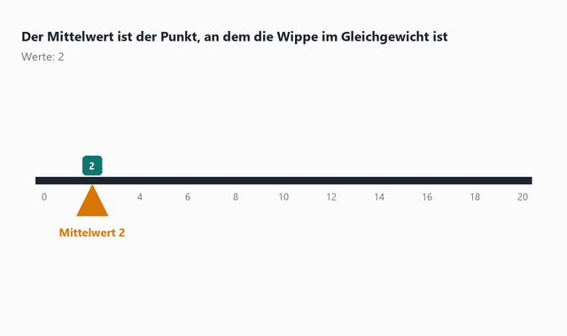
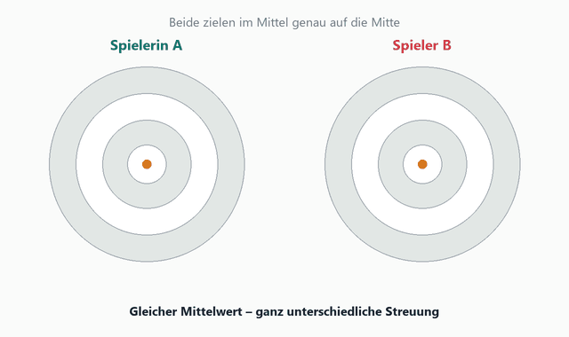
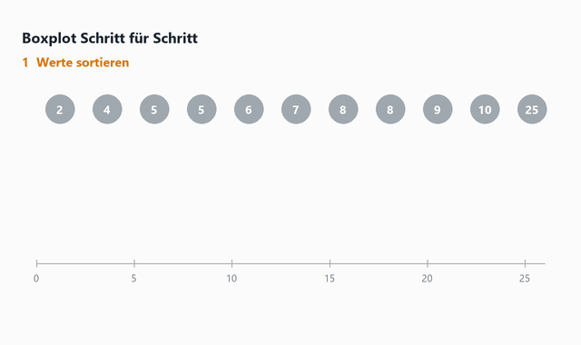
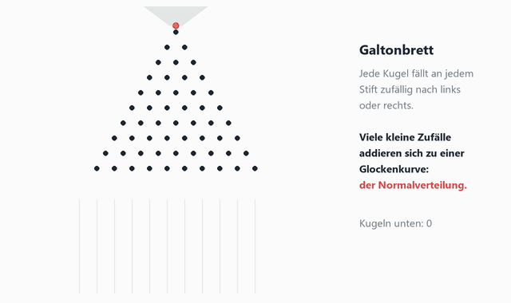
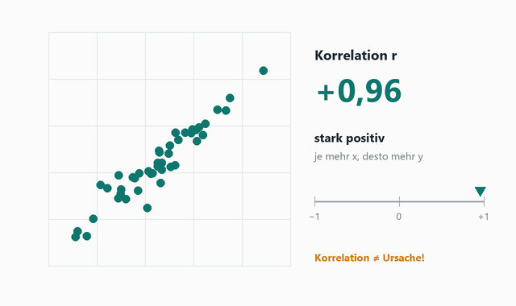
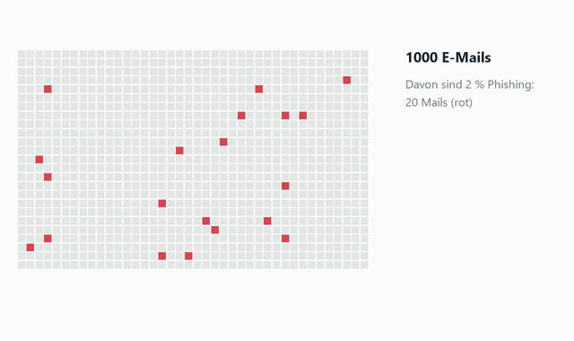
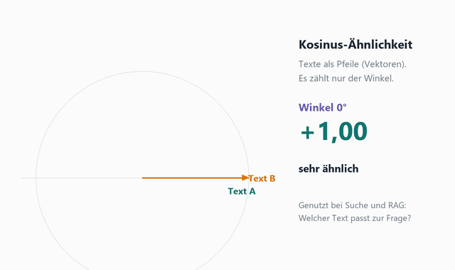
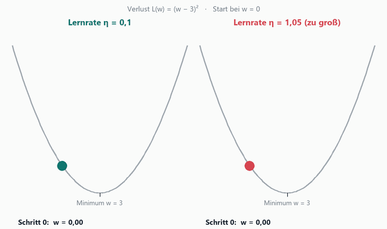

Das mathematische Handwerkszeug – ohne Angst und Schritt für Schritt
Maschinelles Lernen ist im Kern Rechnen mit vielen Zahlen. In diesem Modul lernen Sie die Werkzeuge kennen, mit denen ein Modell Daten beschreibt, Wahrscheinlichkeiten einschätzt und seine eigenen Fehler verkleinert. Sie brauchen dafür nur die Grundrechenarten und einen einfachen Taschenrechner. Jede Formel wird zuerst in Alltagssprache übersetzt und dann mit echten Zahlen vorgerechnet.
Ankommen: Zeichen lesen und Daten einordnen
Keine Angst vor Formeln: Der Zeichen-Übersetzer
Eine Formel ist nichts anderes als eine Abkürzung für einen Satz. „Addiere alle Einkäufe und teile durch die Anzahl der Einkäufe“ ist lang. Mathematiker schreiben das kürzer mit ein paar Zeichen – ähnlich wie Sie „Mo–Fr 8–17 Uhr“ an eine Ladentür schreiben statt „Montag bis Freitag von acht bis siebzehn Uhr“.
Ein Modell muss drei Dinge können: Daten beschreiben (Statistik), mit Unsicherheit umgehen (Wahrscheinlichkeit) und seine Fehler verkleinern (Vektoren und Ableitungen). Genau diese drei Werkzeugkisten lernen Sie hier – in der Prüfung in Teil 1 und 2 der schriftlichen Prüfung.
Alle Zeichen dieses Moduls auf einen Blick
Diese Tabelle ist Ihr Wörterbuch. Kommen Sie immer wieder hierher zurück, wenn Ihnen ein Zeichen fremd vorkommt.
| Zeichen | Sprich | Bedeutung in Alltagssprache | Beispiel |
|---|---|---|---|
| n | „n“ | Anzahl der Werte | 5 Lieferungen → n = 5 |
| xi | „x i“ | Der i-te Wert der Liste | x3 ist der dritte Wert |
| Σ | „Summe“ | Zähle alles zusammen | Σ von 2, 3, 5 = 10 |
| x̄ | „x quer“ | Mittelwert einer Stichprobe | x̄ = 4 |
| μ | „mü“ | Mittelwert der Grundgesamtheit (aller Fälle) | Durchschnittsgröße aller Deutschen |
| σ, s | „sigma“, „s“ | Standardabweichung (wie stark Werte streuen) | σ = 7 cm |
| √ | „Wurzel“ | Welche Zahl mal sich selbst ergibt das? | √9 = 3 |
| x² | „x Quadrat“ | Zahl mal sich selbst | 4² = 16, (−3)² = 9 |
| |x| | „Betrag von x“ | Zahl ohne Minuszeichen | |−5| = 5 |
| P(A) | „P von A“ | Wahrscheinlichkeit, dass A eintritt | P(Sechs) = 1/6 |
| P(A | B) | „P von A gegeben B“ | Wahrscheinlichkeit für A, wenn B schon feststeht | P(Regen | Wolken) |
| ŷ | „y Dach“ | Vorhersage des Modells | Modell schätzt ŷ = 900 € |
| w | „w“ | Gewicht, eine Stellschraube des Modells | w = 0,5 |
| η | „eta“ | Lernrate: wie groß ein Lernschritt ist | η = 0,1 |
| ∂L/∂w | „d L nach d w“ | Wie stark ändert sich der Fehler, wenn ich w ein bisschen drehe? | Steigung des Fehlers |
| ≈ | „ungefähr“ | Gerundet | √2 ≈ 1,41 |
In der IHK-Prüfung gibt es Punkte für den Rechenweg, nicht nur für das Ergebnis. Schreiben Sie immer: Formel → eingesetzte Zahlen → Ergebnis mit Einheit. Auch bei einem Rechenfehler bekommen Sie so Teilpunkte.
Formeln lesen üben: drei Beispiele zum Mitrechnen
Formeln wirken fremd, bis man sie ein paarmal selbst in Worte übersetzt hat. Gehen Sie die drei Beispiele langsam durch. Immer nach demselben Muster: erst vorlesen, dann in Alltagssprache übersetzen, dann mit Zahlen füllen.
Formel: x̄ = 1/n · Σ xi. Die Werte sind die Wartezeiten in Minuten von drei Anrufen: 4, 7 und 9.
- Übersetzung: „Addiere alle Werte und teile durch die Anzahl.“
- Anzahl: n = 3
- Summe: 4 + 7 + 9 = 20
- Teilen: 20 : 3 ≈ 6,67 → Mittlere Wartezeit ≈ 6,7 Minuten
Quadrat und Wurzel sind Gegenspieler: 5² = 25 und √25 = 5. Aufpassen bei Minuszeichen: (−3)² = 9, aber −3² = −9 – ohne Klammer wird nur die 3 quadriert und das Minus davorgesetzt. Im Taschenrechner lohnt es sich, negative Zahlen immer in Klammern einzugeben.
„P(Regen | Wolken) = 0,6“ liest man: „Die Wahrscheinlichkeit für Regen, wenn Wolken da sind, beträgt 60 %.“ Der senkrechte Strich bedeutet „unter der Bedingung“. Er trennt das, was wir wissen wollen (links), von dem, was bereits feststeht (rechts).
- Punkt vor Strich vergessen: 2 + 3 · 4 = 14, nicht 20. Multiplikation und Division gehen vor.
- Klammern weglassen: (2 + 3) · 4 = 20. Bei Brüchen mit Summe im Zähler ((5 + 7) : 2 = 6) immer klammern.
- Dezimalkomma und Punkt: Im Deutschen ist 1.000 tausend und 1,5 anderthalb. Taschenrechner und Tabellenprogramme nutzen oft den Punkt als Dezimaltrenner – prüfen Sie die Einstellung.
Frage (4 Punkte): Erklären Sie in Worten, was die Formel x̄ = (1/n) · Σ xi bedeutet, und berechnen Sie x̄ für die Werte 4, 7, 9.
Musterlösung: Man addiert alle n Werte und teilt die Summe durch die Anzahl n; das Ergebnis ist der Mittelwert (2 Punkte). Rechnung: n = 3, Summe = 20, x̄ = 20 : 3 ≈ 6,67 (2 Punkte).
Jede Formel ist ein Satz in Kurzschrift. Übersetzen Sie sie zuerst in Worte, dann rechnen Sie.
Was für Daten habe ich? Merkmale und Skalenniveaus
Mit Hausnummern rechnet niemand: Hausnummer 10 ist nicht „doppelt so viel“ wie Hausnummer 5. Mit Preisen dagegen schon: 10 € ist doppelt so viel wie 5 €. Ob man mit Zahlen rechnen darf, hängt davon ab, was sie bedeuten. Genau das beschreibt das Skalenniveau.
Grundbegriffe
- Beobachtung (auch Datenpunkt, Datensatz-Zeile): ein einzelner Fall, z. B. ein Kunde.
- Merkmal (Variable, Feature): eine Eigenschaft, die für jeden Fall erfasst wird, z. B. Alter.
- Ausprägung: der konkrete Wert, z. B. 34 Jahre.
- Stichprobe: die Fälle, die man tatsächlich hat. Grundgesamtheit: alle Fälle, über die man etwas aussagen will.
| Skalenniveau | Was gilt | Beispiele | Erlaubte Lagemaße |
|---|---|---|---|
| Nominal | Nur Namen/Kategorien, keine Reihenfolge | Farbe, Wohnort, Zahlungsart | Modus |
| Ordinal | Reihenfolge, aber Abstände unklar | Schulnote, Kleidergröße S/M/L, Zufriedenheit 1–5 | Modus, Median |
| Intervall (metrisch) | Gleiche Abstände, aber kein echter Nullpunkt | Temperatur in °C, Jahreszahl | Modus, Median, Mittelwert |
| Verhältnis (metrisch) | Gleiche Abstände und echter Nullpunkt | Gewicht, Umsatz, Lieferzeit, Alter | alle, auch Verhältnisse („doppelt so viel“) |
Diskret: abzählbare Werte – Anzahl Kinder, Anzahl Bestellungen. Stetig: jeder Zwischenwert möglich – Gewicht 72,384 kg, Temperatur.
20 °C ist nicht „doppelt so warm“ wie 10 °C, weil 0 °C kein echter Nullpunkt ist. Deshalb ist Temperatur in °C nur intervallskaliert.
Für maschinelles Lernen ist das Skalenniveau wichtig, weil es bestimmt, wie man ein Merkmal in Zahlen umwandelt. Eine nominale Farbe darf man nicht einfach als rot = 1, grün = 2, blau = 3 eingeben – das Modell würde denken, blau sei „mehr“ als rot. Wie man es richtig macht (One-Hot-Encoding), lernen Sie in Modul 3.
Eine Kundendatei einordnen: acht Merkmale, acht Entscheidungen
Das Skalenniveau entscheidet, was Sie mit einem Merkmal rechnen dürfen. Üben Sie das an einer typischen Kundendatei:
| Merkmal | Beispielwert | Skalenniveau | Begründung |
|---|---|---|---|
| Postleitzahl | 50667 | nominal | Ist ein Name für einen Ort. 50667 ist nicht „mehr“ als 10115, ein Mittelwert wäre sinnlos. |
| Zahlungsart | PayPal | nominal | Nur Kategorien ohne Reihenfolge. |
| Kundenstatus | Gold / Silber / Bronze | ordinal | Reihenfolge klar, Abstände nicht. |
| Zufriedenheit 1–5 | 4 | ordinal (oft wie metrisch behandelt) | Reihenfolge ja, gleiche Abstände nur angenommen. |
| Geburtsjahr | 1985 | Intervall | Abstände sinnvoll, aber kein echter Nullpunkt (Jahr 0 ist kein „Nichts“). |
| Alter | 34 Jahre | Verhältnis | Echter Nullpunkt, „doppelt so alt“ ist sinnvoll. |
| Jahresumsatz | 1.250 € | Verhältnis | Echter Nullpunkt (0 € = kein Umsatz). |
| Anzahl Beschwerden | 2 | Verhältnis, diskret | Abzählbar, echter Nullpunkt. |
10 °C und 20 °C: Man darf sagen, der Unterschied beträgt 10 Grad. Aber „20 °C ist doppelt so warm wie 10 °C“ ist falsch, denn 0 °C bedeutet nicht „keine Wärme“. Rechnet man in Kelvin um (0 °C = 273,15 K), sind es 283,15 K und 293,15 K – das Verhältnis beträgt nur etwa 1,035. Erst die Kelvin-Skala hat einen echten Nullpunkt und wäre eine Verhältnisskala.
Was folgt daraus für das maschinelle Lernen?
- Nominale Merkmale werden meist per One-Hot-Encoding umgewandelt: Aus „Zahlungsart“ werden mehrere Ja/Nein-Spalten. So bekommt kein Wert eine künstliche Rangfolge.
- Ordinale Merkmale kann man in Rangzahlen (1, 2, 3) umwandeln, wenn die Reihenfolge wichtig ist – mit dem Bewusstsein, dass die Abstände nur angenommen sind.
- Metrische Merkmale werden häufig skaliert, damit Merkmale mit großen Zahlen (Umsatz in Euro) keine kleinen (Anzahl Beschwerden) erdrücken.
Frage (6 Punkte): Nennen Sie die vier Skalenniveaus und je ein Beispiel. Erklären Sie, warum man bei der Postleitzahl keinen Mittelwert bilden darf.
Musterlösung: Nominal (Zahlungsart), ordinal (Schulnote), Intervall (Temperatur in °C), Verhältnis (Umsatz) – je ½ Punkt Nennung, je ½ Punkt Beispiel (4 Punkte). Die Postleitzahl ist nominal: Sie benennt einen Ort, die Zahlenwerte haben keine rechnerische Bedeutung; ein Mittelwert wäre sinnlos (2 Punkte).
Nominal: nur Namen. Ordinal: Reihenfolge. Metrisch: man darf rechnen. Den Mittelwert gibt es nur bei metrischen Daten.
Kurz geprüft: Welches Skalenniveau hat „Kundenzufriedenheit: sehr unzufrieden – unzufrieden – neutral – zufrieden – sehr zufrieden“?
Beschreibende Statistik: Daten auf den Punkt bringen
Bevor ein Modell lernt, muss man die Daten verstehen. Mit wenigen Kennzahlen beschreibt man Tausende Werte.
Der Mittelwert: der Schwerpunkt der Daten
Fünf Freunde legen ihr Taschengeld zusammen und teilen es danach gerecht auf. Was jeder dann bekommt, ist der Mittelwert. Oder als Bild: Legen Sie Gewichte auf eine Wippe – der Mittelwert ist genau der Punkt, an dem die Wippe im Gleichgewicht ist.
Das arithmetische Mittel ist die Summe aller Werte geteilt durch ihre Anzahl. Es nutzt jeden einzelnen Wert – deshalb reagiert es auch stark auf einzelne extreme Werte (Ausreißer).

Rechenweg: Lieferzeiten in Tagen 2, 3, 3, 4, 8
- Werte zählen: n = 5
- Alle Werte addieren: 2 + 3 + 3 + 4 + 8 = 20
- Durch die Anzahl teilen: 20 : 5 = 4
- Ergebnis mit Einheit: Die mittlere Lieferzeit beträgt 4 Tage.
Der gewichtete Mittelwert
Manchmal zählen Werte unterschiedlich stark. Genau so berechnet die IHK Ihre Gesamtnote: Jeder Prüfungsteil hat ein Gewicht. Jeder Wert wird mit seinem Gewicht multipliziert, dann wird addiert. Wenn die Gewichte zusammen 100 % ergeben, muss man nicht mehr teilen.
| Prüfungsteil | Punkte | Gewicht | Punkte × Gewicht |
|---|---|---|---|
| Schriftlich Teil 1 | 80 | 15 % | 12,0 |
| Schriftlich Teil 2 | 70 | 35 % | 24,5 |
| Präsentation | 60 | 25 % | 15,0 |
| Fachgespräch | 90 | 25 % | 22,5 |
| Gesamt | 100 % | 74,0 Punkte |
Der einfache Mittelwert der vier Teile wäre (80 + 70 + 60 + 90) : 4 = 75. Der gewichtete Mittelwert ist 74, weil der schwächere Teil 2 mehr zählt.
Weitere Beispiele: Mittelwerte in der Praxis
Ein Betrieb kauft im Jahr drei Lieferungen ein: 100 Stück zu 4 €, 300 Stück zu 5 € und 600 Stück zu 6 €. Was ist der durchschnittliche Preis je Stück?
- Falsch wäre der einfache Mittelwert der Preise: (4 + 5 + 6) : 3 = 5 €, denn er ignoriert, dass viel mehr Stück zum hohen Preis gekauft wurden.
- Richtig: Jeden Preis mit seiner Menge gewichten. Gesamtkosten: 100 · 4 + 300 · 5 + 600 · 6 = 400 + 1.500 + 3.600 = 5.500 €
- Gesamtmenge: 100 + 300 + 600 = 1.000 Stück
- Durchschnitt: 5.500 : 1.000 → 5,50 € je Stück
In der Produktion arbeiten 10 Beschäftigte mit einem Durchschnittslohn von 2.500 € und in der Verwaltung 30 mit 3.100 €. Der Durchschnitt aller 40 ist nicht der Mittelwert der beiden Zahlen (2.800 €). Richtig:
(10 · 2.500 + 30 · 3.100) : 40 = (25.000 + 93.000) : 40 = 2.950 €
Die größere Gruppe zieht den Gesamtdurchschnitt näher an ihren Wert.
Fünf Mitarbeitende brauchen für den Arbeitsweg 10, 15, 20, 25 und 30 Minuten. Mittelwert: (10 + 15 + 20 + 25 + 30) : 5 = 20 Minuten. Die Abweichungen vom Mittelwert sind −10, −5, 0, +5 und +10; ihre Summe ist 0. Das ist die Eigenschaft des Mittelwerts als „Schwerpunkt“: Was oberhalb zu viel ist, gleicht genau aus, was unterhalb fehlt. Deshalb muss man später die Abweichungen quadrieren (Lektion 5).
- Mittelwerte von Gruppen einfach mitteln, ohne die Gruppengröße zu beachten.
- Prozentzahlen mitteln: Steigt etwas erst um 10 % und dann um 20 %, ist der Gesamtanstieg nicht 15 %, sondern 1,10 · 1,20 = 1,32, also 32 %.
- Den Mittelwert bei stark schiefen Daten (Einkommen) als „typisch“ ausgeben.
Frage (5 Punkte): Berechnen Sie die durchschnittliche Lieferzeit: Lieferant A liefert 20 Bestellungen in durchschnittlich 3 Tagen, Lieferant B 60 Bestellungen in durchschnittlich 5 Tagen.
Musterlösung: Gewichteter Mittelwert (2 Punkte): (20 · 3 + 60 · 5) : (20 + 60) = (60 + 300) : 80 = 360 : 80 = 4,5 Tage (3 Punkte). Der einfache Mittelwert 4 Tage wäre falsch.
Mittelwert = Summe : Anzahl. Er ist der Schwerpunkt der Daten und wird von Ausreißern stark verschoben.
Median und Modus: die robusten Geschwister
In einer Kneipe sitzen neun Gäste, jeder verdient 3.000 € im Monat. Dann kommt ein Millionär herein, der 300.000 € im Monat verdient. Plötzlich ist das „Durchschnittseinkommen“ in der Kneipe 32.700 €. Keiner der neun Gäste ist dadurch reicher geworden. Der Mittelwert führt hier in die Irre – der Median nicht.
Der Wert in der Mitte der sortierten Liste. Die Hälfte der Werte liegt darunter, die Hälfte darüber. Ausreißer an den Rändern verändern ihn kaum – er ist robust.
Der Wert, der am häufigsten vorkommt. Es kann mehrere geben. Er ist das einzige Lagemaß für nominale Daten („häufigste Zahlungsart: PayPal“).
Rechenweg Median – ungerade Anzahl
- Werte sortieren: 8, 2, 4, 3, 3 → 2, 3, 3, 4, 8
- Position der Mitte: (n + 1) : 2 = (5 + 1) : 2 = 3. Stelle
- Wert ablesen: Median = 3
Rechenweg Median – gerade Anzahl
- Werte sortieren: 12, 3, 8, 5, 10, 7 → 3, 5, 7, 8, 10, 12
- Es gibt zwei mittlere Werte (3. und 4. Stelle): 7 und 8
- Deren Mittelwert bilden: (7 + 8) : 2 = 7,5 → Median = 7,5
| Kneipenbeispiel | Mittelwert | Median |
|---|---|---|
| 9 Gäste mit je 3.000 € | 3.000 € | 3.000 € |
| + 1 Gast mit 300.000 € | (9 · 3.000 + 300.000) : 10 = 32.700 € | 3.000 € |
| Lagemaß | Stärke | Schwäche | Wann nehmen? |
|---|---|---|---|
| Mittelwert | Nutzt alle Informationen | Empfindlich gegen Ausreißer | Symmetrische Daten ohne Ausreißer |
| Median | Robust gegen Ausreißer | Ignoriert, wie weit Werte entfernt sind | Einkommen, Immobilienpreise, Lieferzeiten |
| Modus | Auch für Kategorien | Bei vielen verschiedenen Werten wenig aussagekräftig | Nominale Daten, häufigste Größe |
Weitere Beispiele: Wann Median und Modus die bessere Wahl sind
Acht Beschäftigte verdienen: 2.400, 2.500, 2.500, 2.600, 2.700, 2.800, 3.000 und 9.000 € (die Geschäftsführung).
- Mittelwert: 27.500 : 8 = 3.437,50 € – kein Beschäftigter außer der Geschäftsführung verdient annähernd so viel.
- Median: Werte sind sortiert, n = 8 (gerade). Mittlere Werte: 4. und 5. Stelle, also 2.600 und 2.700. (2.600 + 2.700) : 2 = 2.650 € – ein viel typischerer Wert.
- Modus: 2.500 € kommt zweimal vor, alle anderen einmal. Modus = 2.500 €
Wer „das Durchschnittsgehalt“ bewerben will, nimmt gern den Mittelwert; wer ehrlich informieren will, nennt den Median.
Ein Webshop zählt die Zahlungsarten: 120-mal PayPal, 90-mal Rechnung, 60-mal Karte. Einen Mittelwert gibt es hier nicht (Kategorien!). Der Modus ist PayPal – die häufigste Zahlungsart. Das ist die einzige sinnvolle Lagemessung bei nominalen Daten.
- Mittelwert größer als Median: Einzelne sehr hohe Werte ziehen den Mittelwert nach oben – die Verteilung ist rechtsschief (Einkommen, Wartezeiten).
- Mittelwert kleiner als Median: wenige sehr niedrige Werte ziehen ihn nach unten – linksschief (z. B. Punkte in einer sehr leichten Klausur).
- Mittelwert ungefähr gleich dem Median: die Daten sind ungefähr symmetrisch.
- Median aus der unsortierten Liste ablesen.
- Bei gerader Anzahl nur einen der beiden mittleren Werte nehmen.
- Beim Modus vergessen, dass es mehrere geben kann (zwei gleich häufige Werte: bimodal).
Frage (6 Punkte): Berechnen Sie Mittelwert, Median und Modus für die Werte 4, 7, 7, 9, 13 und beurteilen Sie, welches Maß hier am besten passt.
Musterlösung: Mittelwert 40 : 5 = 8 (2 Punkte). Median: sortiert, n = 5, mittlerer Wert (3. Stelle) = 7 (2 Punkte). Modus: 7 (1 Punkt). Alle drei liegen nah beieinander, die Daten sind ungefähr symmetrisch ohne starke Ausreißer; der Mittelwert ist daher geeignet (1 Punkt).
Median = Mitte der sortierten Werte, robust gegen Ausreißer. Modus = häufigster Wert. Liegen Mittelwert und Median weit auseinander, gibt es Ausreißer oder eine schiefe Verteilung.
Streuung: Wie weit liegen die Werte auseinander?
Zwei Dartspieler zielen beide im Mittel genau auf die Mitte. Die eine trifft immer dicht daneben, der andere mal oben links, mal unten rechts. Der Mittelwert ist gleich – die Zuverlässigkeit völlig verschieden. Diese Zuverlässigkeit misst die Streuung.

| Streuungsmaß | Idee | Formel in Worten |
|---|---|---|
| Spannweite | Abstand vom kleinsten zum größten Wert | Maximum − Minimum |
| Varianz (s²) | Durchschnittliche quadrierte Abweichung vom Mittelwert | Summe der quadrierten Abweichungen : (n − 1) |
| Standardabweichung (s) | Typischer Abstand eines Werts vom Mittelwert, in der Originaleinheit | Wurzel aus der Varianz |
| Interquartilsabstand (IQR) | Breite der mittleren Hälfte der Daten, robust | Q3 − Q1 (Lektion 6) |
Rechenweg: Lieferzeiten 2, 3, 3, 4, 8 (Mittelwert 4)
| Wert xi | Abweichung xi − 4 | Quadrat (xi − 4)² |
|---|---|---|
| 2 | −2 | 4 |
| 3 | −1 | 1 |
| 3 | −1 | 1 |
| 4 | 0 | 0 |
| 8 | 4 | 16 |
| Summe | 0 | 22 |
- Summe der Quadrate: 4 + 1 + 1 + 0 + 16 = 22
- Durch (n − 1) teilen: 22 : 4 = 5,5 → Varianz s² = 5,5 Tage²
- Wurzel ziehen: √5,5 ≈ 2,35 → Standardabweichung ≈ 2,35 Tage
- Deutung: Eine Lieferung weicht typischerweise etwa 2,35 Tage vom Mittelwert 4 Tage ab.
Die Abweichungen ergeben addiert immer 0 (siehe Tabelle) – positive und negative heben sich auf. Durch das Quadrieren werden alle positiv. Nebeneffekt: Große Abweichungen zählen überproportional (4² = 16, aber 1² = 1).
Bei einer Stichprobe teilt man durch n − 1, weil der Mittelwert selbst aus denselben Daten geschätzt wurde – das gleicht eine kleine Unterschätzung aus. Kennt man alle Fälle (Grundgesamtheit), teilt man durch n: 22 : 5 = 4,4; σ ≈ 2,10.
Die Varianz hat die Einheit „Tage²“ und ist deshalb schwer zu deuten. Für Aussagen in Worten immer die Standardabweichung verwenden. Und: Lesen Sie genau, ob nach Stichproben- (n − 1) oder Grundgesamtheits-Varianz (n) gefragt ist. Steht nichts dabei, rechnen Sie mit n − 1 und schreiben Sie das dazu.
Zwei Lieferanten, gleicher Mittelwert, ganz verschiedene Zuverlässigkeit
Streuung wird erst anschaulich, wenn man zwei Datensätze mit gleichem Mittelwert vergleicht. Die Lieferzeiten in Tagen für fünf Bestellungen:
| Lieferzeiten | Mittelwert | Spannweite | Σ (x − x̄)² | Varianz s² | Standardabw. s | |
|---|---|---|---|---|---|---|
| A | 3, 4, 4, 4, 5 | 4 | 2 | 1 + 0 + 0 + 0 + 1 = 2 | 2 : 4 = 0,5 | ≈ 0,71 |
| B | 1, 2, 4, 6, 7 | 4 | 6 | 9 + 4 + 0 + 4 + 9 = 26 | 26 : 4 = 6,5 | ≈ 2,55 |
Beide Lieferanten liefern im Mittel nach 4 Tagen. Bei A weicht eine Lieferung typischerweise nur 0,7 Tage ab, bei B etwa 2,6 Tage. A ist zuverlässiger und besser planbar. Kein Mittelwert allein hätte das gezeigt.
Wie streuen Lieferzeiten (Mittelwert 4 Tage) im Vergleich zu Bestellwerten (Mittelwert 4.000 €)? Man teilt die Standardabweichung durch den Mittelwert: s : x̄. Für Lieferant A: 0,71 : 4 ≈ 17,7 %, für B: 2,55 : 4 ≈ 63,7 %. So kann man Streuungen von Größen mit unterschiedlicher Einheit vergleichen.
Eine Abfüllanlage soll 500 g füllen. Der Mittelwert stimmt (500 g), aber die Standardabweichung beträgt 8 g. Dann liegen etwa 5 % der Packungen mehr als 16 g (zwei Standardabweichungen) vom Soll entfernt, das heißt unter 484 g oder über 516 g. Bei s = 2 g wären es nur ±4 g. In der Qualitätssicherung wird deshalb nicht nur der Mittelwert, sondern vor allem die Streuung überwacht.
- Die Wurzel am Ende vergessen und die Varianz als Standardabweichung ausgeben.
- Durch n statt n − 1 teilen, ohne darauf zu achten, ob eine Stichprobe vorliegt.
- Die Abweichungen vor dem Quadrieren addieren (Ergebnis immer 0).
Frage (6 Punkte): Berechnen Sie Spannweite, Varianz und Standardabweichung (Stichprobe) für die Werte 2, 4, 6.
Musterlösung: Spannweite 6 − 2 = 4 (1 Punkt). Mittelwert 4 (1 Punkt). Abweichungen −2, 0, +2; Quadrate 4, 0, 4; Summe 8 (2 Punkte). Varianz 8 : (3 − 1) = 4 (1 Punkt). Standardabweichung √4 = 2 (1 Punkt).
Standardabweichung = typischer Abstand vom Mittelwert. Klein heißt zuverlässig und gleichmäßig, groß heißt unberechenbar.
Quartile, Boxplot und Ausreißer
Stellen Sie eine Schulklasse der Größe nach in eine Reihe. Teilen Sie die Reihe in vier gleich große Gruppen. Die drei Trennstellen heißen Quartile. Die mittleren beiden Gruppen sind die „ganz normalen“ Schüler – wer weit außerhalb steht, ist auffällig.

Begriffe
- Q1 (unteres Quartil): 25 % der Werte liegen darunter.
- Q2 = Median: 50 % liegen darunter.
- Q3 (oberes Quartil): 75 % liegen darunter.
- IQR = Q3 − Q1: Breite der mittleren Hälfte.
- Ausreißer-Regel nach Tukey: Ausreißer ist, was unter Q1 − 1,5 · IQR oder über Q3 + 1,5 · IQR liegt.
Rechenweg: 2, 4, 5, 5, 6, 7, 8, 8, 9, 10, 25
- Sortiert? Ja. n = 11. Median = 6. Wert: Median = 7
- Untere Hälfte ohne Median: 2, 4, 5, 5, 6 → deren Median: Q1 = 5
- Obere Hälfte ohne Median: 8, 8, 9, 10, 25 → deren Median: Q3 = 9
- IQR: 9 − 5 = 4
- Grenzen: unten 5 − 1,5 · 4 = −1 · oben 9 + 1,5 · 4 = 15
- Prüfen: 25 > 15 → 25 ist ein Ausreißer. Die Antennen (Whisker) reichen bis zum kleinsten bzw. größten Wert innerhalb der Grenzen: 2 und 10.
Es gibt mehrere Rechenmethoden für Quartile; Software wie Excel kann leicht andere Werte liefern. In der Prüfung gilt: Methode nennen und sauber durchziehen. Die hier gezeigte Methode („Median der unteren und oberen Hälfte“) ist die einfachste und von Hand am sichersten.
Nicht automatisch löschen! Erst fachlich klären: Messfehler (Tippfehler 250 statt 25) → korrigieren oder entfernen. Echter, seltener Fall (Großkunde) → behalten, eventuell gesondert betrachten. Bei Betrugserkennung sind die Ausreißer sogar genau das, was man sucht.
Alternative für etwa normalverteilte Daten: Ein Wert mit |z| > 3 gilt als Ausreißer (Lektion 8).
Weitere Beispiele: Quartile bei gerader Anzahl und Boxplots lesen
Acht Bearbeitungszeiten in Minuten: 3, 5, 6, 8, 9, 11, 12, 14.
- Median (n = 8, mittlere Werte 8 und 9): (8 + 9) : 2 = 8,5
- Untere Hälfte: 3, 5, 6, 8 → Q1 = (5 + 6) : 2 = 5,5
- Obere Hälfte: 9, 11, 12, 14 → Q3 = (11 + 12) : 2 = 11,5
- IQR: 11,5 − 5,5 = 6
- Grenzen: 5,5 − 1,5 · 6 = −3,5 · 11,5 + 1,5 · 6 = 20,5. Alle Werte liegen dazwischen: keine Ausreißer.
Lieferant A hat einen Median von 3 Tagen und eine schmale Box (IQR 1). Lieferant B hat einen Median von 4 Tagen, eine breite Box (IQR 4) und einen Ausreißer bei 14 Tagen. Deutung: A liefert schneller und gleichmäßiger. B ist im Mittel nur einen Tag langsamer, aber unberechenbar – und gelegentlich kommt es zu extremen Verspätungen. Für Entscheidungen, bei denen Pünktlichkeit zählt, ist A zu bevorzugen.
In den Verkaufsdaten steht eine Bestellung über 1.000 Stück, sonst liegen alle zwischen 10 und 60. Der Boxplot markiert sie als Ausreißer. Rückfrage beim Vertrieb: Es war eine einmalige Großbestellung für einen Messestand. Man behält den Wert in der Datenbank, schließt ihn aber für die Prognose des normalen Geschäfts aus. Hätte es sich um einen Tippfehler (100 statt 10) gehandelt, würde man ihn korrigieren. Erst die fachliche Klärung entscheidet.
Frage (7 Punkte): Bestimmen Sie für die Werte 1, 3, 4, 5, 6, 7, 30 Median, Q1, Q3 und IQR und prüfen Sie, ob Ausreißer vorliegen.
Musterlösung: n = 7, Median = 5 (1 Punkt). Untere Hälfte 1, 3, 4: Q1 = 3 (1 Punkt). Obere Hälfte 6, 7, 30: Q3 = 7 (1 Punkt). IQR = 7 − 3 = 4 (1 Punkt). Grenzen: unten 3 − 6 = −3, oben 7 + 6 = 13 (2 Punkte). Der Wert 30 liegt darüber: Ausreißer (1 Punkt).
Box = mittlere Hälfte (Q1 bis Q3). Ausreißer liegen mehr als 1,5 IQR außerhalb der Box.
Daten richtig darstellen: welches Diagramm für welche Frage?
Ein Wetterbericht zeigt die Temperatur der Woche als Linie, die Regenwahrscheinlichkeit als Balken und die Windrichtung als Pfeil. Jede Frage hat ihr passendes Bild. Ein falsches Diagramm verwirrt mehr, als es erklärt.
| Frage | Diagramm | Beispiel im ML-Projekt |
|---|---|---|
| Wie sind die Werte verteilt? | Histogramm (Balken für Wertebereiche) | Verteilung des Kundenalters prüfen |
| Gibt es Ausreißer? Wie unterscheiden sich Gruppen? | Boxplot | Lieferzeiten je Lieferant vergleichen |
| Hängen zwei Merkmale zusammen? | Streudiagramm | Wohnfläche gegen Miete |
| Wie entwickelt sich ein Wert über die Zeit? | Liniendiagramm | Umsatz pro Monat, Trainingsfehler pro Epoche |
| Wie viele pro Kategorie? | Balkendiagramm | Anzahl Beschwerden je Thema |
| Wie hängen viele Merkmale paarweise zusammen? | Heatmap der Korrelationen | Welche Sensorwerte bewegen sich gemeinsam? |
- Achsen beschriftet, mit Einheit
- Y-Achse bei Balken beginnt bei 0
- Eine Botschaft pro Diagramm, als Titel formuliert
- Farben sparsam und mit Bedeutung
- Abgeschnittene Y-Achse lässt kleine Unterschiede riesig wirken
- 3D-Tortendiagramme verzerren Anteile
- Zwei Y-Achsen erzeugen Schein-Zusammenhänge
Visualisierung ist der erste Schritt jeder Datenanalyse (explorative Datenanalyse, kurz EDA). Ein Blick auf das Histogramm zeigt oft sofort Ausreißer, Lücken oder Fehler, die in einer Tabelle mit 10.000 Zeilen untergehen.
Üben: Das richtige Diagramm wählen
| Situation | Diagramm | Warum |
|---|---|---|
| Wie verteilen sich die Kundenalter (5.000 Werte)? | Histogramm | Zeigt Häufigkeit in Altersklassen, Form der Verteilung |
| Vergleich der Bearbeitungszeiten von vier Standorten | Boxplots nebeneinander | Median, Streuung und Ausreißer je Standort auf einen Blick |
| Hängt Werbebudget mit Umsatz zusammen? | Streudiagramm | Jeder Monat ein Punkt; Muster werden sichtbar |
| Wie entwickelt sich der Umsatz 2023 bis 2025? | Liniendiagramm | Zeitverlauf und Trend |
| Beschwerden nach Themen | Balkendiagramm (sortiert) | Rangfolge der Kategorien |
| Welche von 30 Sensorwerten hängen zusammen? | Heatmap der Korrelationen | 30 × 30 Paare in einem Bild |
Der Umsatz stieg von 100 auf 102 Millionen Euro, also um 2 %. Zeichnet man die senkrechte Achse nicht bei 0, sondern bei 99 beginnend, ragt der Balken für 102 etwa dreimal so hoch wie der für 100 (3 : 1 statt 102 : 100). Der Betrachter meint, der Umsatz habe sich verdreifacht. Bei Balkendiagrammen muss die Achse immer bei 0 beginnen. Bei Liniendiagrammen ist ein Ausschnitt erlaubt, sollte aber kenntlich gemacht werden.
Schlecht: Titel „Umsatz“, vier Farben, keine Achsenbeschriftung. Gut: Titel „Der Umsatz stieg 2025 um 8 %, getrieben vom Onlinegeschäft“, zwei Linien (Filiale, Online) in klar unterscheidbaren Farben, Achsen mit Einheit „Mio. €“ und Jahreszahl, eine kurze Anmerkung zum Einbruch im März. Die Aussage ist beim ersten Blick klar.
Frage (5 Punkte): Sie wollen prüfen, ob Ausreißer in den Lieferzeiten vorliegen, und die Lieferzeiten dreier Lieferanten vergleichen. Welches Diagramm wählen Sie? Nennen Sie zwei Merkmale einer guten Darstellung.
Musterlösung: Boxplots, je Lieferant einer nebeneinander (2 Punkte). Sie zeigen Median, Streuung (Box) und Ausreißer. Merkmale: Achsen mit Beschriftung und Einheit, Balken beginnen bei 0 (bei Boxplots: gemeinsame Skala), Titel mit Kernaussage (je 1,5 Punkte).
Verteilung → Histogramm. Vergleich mit Ausreißern → Boxplot. Zusammenhang → Streudiagramm. Zeitverlauf → Linie. Anzahl je Kategorie → Balken.
Die Normalverteilung und der z-Wert
Messen Sie die Körpergröße von 1.000 erwachsenen Männern. Die meisten sind etwa 1,76 m groß, einige 1,65 m oder 1,87 m, ganz wenige 1,55 m oder 1,97 m. Trägt man die Anzahl je Größe auf, entsteht eine Glocke. Diese Form taucht überall auf, wo viele kleine Zufälle zusammenwirken.

Eigenschaften der Normalverteilung
- Symmetrisch um den Mittelwert μ; Mittelwert = Median = Modus.
- Vollständig beschrieben durch zwei Zahlen: Mittelwert μ und Standardabweichung σ.
- Je größer σ, desto flacher und breiter die Glocke.
| Bereich | Anteil der Werte | Körpergröße (μ = 176 cm, σ = 7 cm) |
|---|---|---|
| μ ± 1σ | ca. 68 % | 169 bis 183 cm |
| μ ± 2σ | ca. 95 % | 162 bis 190 cm |
| μ ± 3σ | ca. 99,7 % | 155 bis 197 cm |
Rechenweg: Wie ungewöhnlich ist eine Größe von 197 cm?
- Abstand zum Mittelwert: 197 − 176 = 21 cm
- In Standardabweichungen umrechnen: 21 : 7 = 3
- Deutung: z = 3 – nur etwa 0,15 % der Männer sind so groß oder größer.
Mit dem z-Wert bringt man Merkmale mit ganz verschiedenen Einheiten (Alter in Jahren, Einkommen in Euro) auf eine gemeinsame Skala. Das heißt Standardisierung und ist Pflicht für viele Verfahren (Modul 3). Außerdem: |z| > 3 als einfache Ausreißer-Regel.
Einkommen, Wartezeiten oder Dateigrößen sind rechtsschief: viele kleine, wenige sehr große Werte. Dort liegt der Mittelwert rechts vom Median. Vor dem Rechnen immer erst ein Histogramm anschauen.
Weitere Beispiele: mit der Normalverteilung rechnen
Flaschen werden mit μ = 500 ml und σ = 2 ml gefüllt (annähernd normalverteilt).
- Wie viel Prozent liegen zwischen 496 und 504 ml? Das sind μ ± 2σ (500 ± 4): ca. 95 %.
- Wie viel Prozent liegen unter 494 ml? z = (494 − 500) : 2 = −3; nur etwa 0,15 % – bei 100.000 Flaschen rund 150.
- Was bedeutet das für den Betrieb? Wer weniger als 0,15 % Ausschuss will, muss σ verkleinern oder den Mittelwert leicht anheben.
Klausur A: 78 Punkte bei Mittelwert 70 und σ = 8. Klausur B: 85 Punkte bei Mittelwert 80 und σ = 10.
- Klausur A: z = (78 − 70) : 8 = 1,0
- Klausur B: z = (85 − 80) : 10 = 0,5
- A war relativ besser: eine Standardabweichung über dem Schnitt gegen eine halbe.
Die absoluten Punkte (85 gegen 78) täuschen: Erst die Standardisierung macht die beiden Klausuren vergleichbar. Genau das nutzt man beim Skalieren von Merkmalen im ML.
Die Bearbeitungsdauer einer Anfrage ist im Mittel 24 Minuten bei σ = 6. Eine Anfrage dauert 51 Minuten: z = (51 − 24) : 6 = 4,5. Das liegt weit jenseits von |z| = 3 – ein Ausreißer, den man prüfen sollte (Systemausfall? Sonderfall?).
- Vorzeichen vergessen: Werte unter dem Mittelwert haben ein negatives z.
- Normalverteilung ungeprüft annehmen: Bei schiefen Daten (Einkommen) stimmen 68-95-99,7 nicht. Erst das Histogramm anschauen.
- σ der Stichprobe und σ der Grundgesamtheit verwechseln (Lektion 5).
Frage (5 Punkte): Eine Messgröße ist normalverteilt mit μ = 50 und σ = 4. Berechnen Sie den z-Wert für x = 62 und beurteilen Sie, ob der Wert ein Ausreißer ist.
Musterlösung: z = (62 − 50) : 4 = 3 (3 Punkte). Der Wert liegt drei Standardabweichungen über dem Mittelwert; nur etwa 0,15 % der Werte sind so hoch oder höher. Nach der Regel |z| > 3 ist er gerade an der Grenze zum Ausreißer und sollte fachlich geprüft werden (2 Punkte).
68 – 95 – 99,7: So viel Prozent liegen innerhalb von 1, 2 und 3 Standardabweichungen um den Mittelwert.
Korrelation: Hängen zwei Merkmale zusammen?
Je wärmer es ist, desto mehr Eis wird verkauft – und desto mehr Menschen haben Sonnenbrand. Eisverkauf und Sonnenbrand steigen also gemeinsam. Macht Eis Sonnenbrand? Natürlich nicht: Die Sonne verursacht beides. Ein gemeinsames Steigen heißt Korrelation – eine Ursache ist es noch lange nicht.

| r | Deutung | Beispiel |
|---|---|---|
| +0,8 bis +1 | starker positiver Zusammenhang | Wohnfläche und Miete |
| +0,3 bis +0,8 | mittlerer positiver Zusammenhang | Werbebudget und Umsatz |
| −0,3 bis +0,3 | kaum linearer Zusammenhang | Schuhgröße und Intelligenz |
| −0,8 bis −0,3 | mittlerer negativer Zusammenhang | Preis und Absatzmenge |
| −1 bis −0,8 | starker negativer Zusammenhang | Außentemperatur und Heizkosten |
Die Grenzen 0,3 und 0,8 sind Faustregeln, keine festen Normen. Fachlich heißt der Wert Korrelationskoeffizient nach Pearson. Er wird in der Prüfung praktisch nie von Hand berechnet, aber gedeutet.
In Regionen mit mehr Störchen werden mehr Kinder geboren. Grund: Ländliche Regionen haben mehr Störche und mehr Kinder. Eine dritte Größe (Störvariable) erklärt beide. Für Ursache-Wirkung braucht man Experimente (z. B. A/B-Tests).
r misst nur gerade Zusammenhänge. Ein U-förmiger Zusammenhang (zu wenig und zu viel Dünger schaden) kann r ≈ 0 ergeben, obwohl ein starker Zusammenhang besteht. Deshalb immer auch das Streudiagramm anschauen.
Quadriert man r, erhält man den Anteil der Schwankung, den der Zusammenhang erklärt. Bei r = 0,8 ist r² = 0,64: 64 % der Unterschiede in der Miete lassen sich durch die Wohnfläche erklären, 36 % durch anderes (Lage, Ausstattung). Dieses R² begegnet Ihnen in Modul 6 wieder als Gütemaß für Regressionsmodelle.
Korrelationen helfen bei der Merkmalsauswahl: Merkmale, die mit dem Ziel korrelieren, sind vielversprechend. Zwei Merkmale, die untereinander fast perfekt korrelieren (Preis in Euro und Preis in Dollar), sind doppelt – eines reicht.
Eine Korrelation Schritt für Schritt berechnen
In der Prüfung deuten Sie meist nur r. Um zu verstehen, was r misst, lohnt sich einmal die Handrechnung mit kleinen Zahlen. Gegeben: Werbebudget x (in Tausend Euro) und Umsatz y (in Tausend Euro) in fünf Monaten.
| Monat | x | y | x − x̄ | y − ȳ | Produkt | (x − x̄)² | (y − ȳ)² |
|---|---|---|---|---|---|---|---|
| 1 | 1 | 10 | −2 | −6 | 12 | 4 | 36 |
| 2 | 2 | 14 | −1 | −2 | 2 | 1 | 4 |
| 3 | 3 | 15 | 0 | −1 | 0 | 0 | 1 |
| 4 | 4 | 20 | 1 | 4 | 4 | 1 | 16 |
| 5 | 5 | 21 | 2 | 5 | 10 | 4 | 25 |
| Summe | 15 | 80 | 28 | 10 | 82 |
- Mittelwerte: x̄ = 15 : 5 = 3 · ȳ = 80 : 5 = 16
- Formel: r = Σ(x − x̄)(y − ȳ) : √[Σ(x − x̄)² · Σ(y − ȳ)²]
- Einsetzen: r = 28 : √(10 · 82) = 28 : √820 ≈ 28 : 28,64
- r ≈ 0,98 – ein sehr starker positiver Zusammenhang. Bestimmtheitsmaß: r² ≈ 0,96, also 96 % der Umsatzunterschiede lassen sich durch das Werbebudget erklären.
Eine Auswertung ergibt: Je mehr Feuerwehrleute bei einem Brand im Einsatz sind, desto größer der Schaden (r = 0,8). Folgt daraus, dass Feuerwehrleute Schaden verursachen? Natürlich nicht. Der große Brand erklärt beides: Er braucht mehr Einsatzkräfte und richtet mehr Schaden an. Diese dritte Größe ist die Störvariable.
Bei Heizkosten und Außentemperatur ist r = −0,95: Je kälter, desto höher die Kosten. Das „Minus“ heißt nur, dass beide in entgegengesetzte Richtung laufen. Der Zusammenhang ist sehr stark (0,95 ist nahe 1). Aus einer Korrelation von −0,95 darf man schließen: Mit steigender Temperatur sinken die Heizkosten verlässlich – aber man kann noch nicht sagen, um wie viel pro Grad. Das leistet erst die Regression (Modul 4).
Frage (5 Punkte): Zwischen Eisverkauf und Sonnenbrandfällen wurde r = 0,85 berechnet. Deuten Sie den Wert und erklären Sie, warum man nicht auf eine Ursache schließen darf.
Musterlösung: r = 0,85 bedeutet einen starken positiven linearen Zusammenhang; beide steigen gemeinsam (2 Punkte). r² = 0,72, also etwa 72 % der Schwankung hängen zusammen (1 Punkt). Korrelation ist keine Kausalität: Eine Störvariable, nämlich das Wetter (Sonne und Hitze), verursacht beides (2 Punkte).
r liegt zwischen −1 und +1 und misst die Stärke eines linearen Zusammenhangs. Korrelation beweist keine Ursache.
Wahrscheinlichkeit: mit Unsicherheit rechnen
Ein Modell gibt fast nie „sicher“ aus, sondern „mit 87 % Wahrscheinlichkeit“. Wer das versteht, kann Modellergebnisse richtig deuten.
Grundlagen der Wahrscheinlichkeit
„Morgen 70 % Regenwahrscheinlichkeit“ heißt: An Tagen mit dieser Wetterlage regnet es in etwa 7 von 10 Fällen. Wahrscheinlichkeit ist ein Maß dafür, wie oft etwas auf lange Sicht passiert – zwischen 0 (nie) und 1 (immer), oft als Prozent geschrieben.
| Regel | Formel | Beispiel |
|---|---|---|
| Gegenereignis („nicht A“) | P(nicht A) = 1 − P(A) | P(keine Sechs) = 1 − 1/6 = 5/6 |
| UND bei unabhängigen Ereignissen | P(A und B) = P(A) · P(B) | Zwei Sechsen hintereinander: 1/6 · 1/6 = 1/36 ≈ 2,8 % |
| ODER bei Ereignissen, die sich ausschließen | P(A oder B) = P(A) + P(B) | Eins oder Zwei: 1/6 + 1/6 = 1/3 |
| Mindestens einmal | 1 − P(keinmal) | Mindestens eine Sechs in 3 Würfen: 1 − (5/6)³ ≈ 42 % |
Rechenweg: Ausfall zweier Maschinen
Maschine A fällt an einem Tag mit 5 % aus, Maschine B mit 2 %. Die Ausfälle sind unabhängig.
- Beide fallen aus: 0,05 · 0,02 = 0,001 = 0,1 %
- Keine fällt aus: 0,95 · 0,98 = 0,931
- Mindestens eine fällt aus: 1 − 0,931 = 0,069 → 6,9 %
Bedingte Wahrscheinlichkeit mit der Vierfeldertafel
Ein Betrieb hat 200 Beschäftigte. Wer arbeitet im Homeoffice?
| Homeoffice | kein Homeoffice | Summe | |
|---|---|---|---|
| Verwaltung | 48 | 32 | 80 |
| Produktion | 12 | 108 | 120 |
| Summe | 60 | 140 | 200 |
- Wahrscheinlichkeit Homeoffice insgesamt: P(HO) = 60 / 200 = 30 %
- Homeoffice, wenn jemand in der Verwaltung ist: Man schaut nur auf die Zeile Verwaltung. P(HO | Verwaltung) = 48 / 80 = 60 %
- Verwaltung, wenn jemand im Homeoffice ist: Man schaut nur auf die Spalte Homeoffice. P(Verwaltung | HO) = 48 / 60 = 80 %
P(A | B) ist nicht dasselbe wie P(B | A). 60 % der Verwaltung arbeitet im Homeoffice, aber 80 % der Homeoffice-Leute sind aus der Verwaltung. Immer fragen: „Auf welche Gruppe schaue ich gerade?“ Die Bedingung hinter dem Strich ist die Gruppe, durch die man teilt.
Weitere Beispiele: Wahrscheinlichkeit im Alltag und im Betrieb
In einer Urne liegen 5 rote und 3 blaue Kugeln (insgesamt 8). P(rot) = 5 : 8 = 62,5 %.
- Zwei rote hintereinander mit Zurücklegen (die Ziehungen sind unabhängig): 5/8 · 5/8 = 25/64 ≈ 39,1 %
- Zwei rote hintereinander ohne Zurücklegen: Beim zweiten Zug sind nur noch 4 rote von 7 Kugeln übrig. 5/8 · 4/7 = 20/56 ≈ 35,7 %
Der Unterschied zeigt: Ohne Zurücklegen sind die Ziehungen abhängig, die einfache Multiplikation von P(A) und P(B) gilt nur für unabhängige Ereignisse.
Ein Fehler in einem Bauteil wird von jeder von drei unabhängigen Prüfstationen mit 80 % Wahrscheinlichkeit gefunden. Wie wahrscheinlich ist es, dass der Fehler mindestens einmal gefunden wird?
- Eine Station findet ihn nicht: 1 − 0,8 = 0,2
- Alle drei übersehen ihn: 0,2 · 0,2 · 0,2 = 0,008
- Mindestens eine findet ihn: 1 − 0,008 = 0,992 → 99,2 %
Das ist die Idee der „mehrfachen Absicherung“: Selbst unvollkommene Prüfungen erreichen zusammen eine hohe Sicherheit – wenn sie wirklich unabhängig voneinander arbeiten.
| Newsletter | kein Newsletter | Summe | |
|---|---|---|---|
| Frauen | 90 | 90 | 180 |
| Männer | 30 | 90 | 120 |
| Summe | 120 | 180 | 300 |
- P(Newsletter) = 120 : 300 = 40 %
- P(Newsletter | Frau) = 90 : 180 = 50 % – nur auf die Zeile „Frauen“ schauen
- P(Newsletter | Mann) = 30 : 120 = 25 %
- P(Frau | Newsletter) = 90 : 120 = 75 % – jetzt nur auf die Spalte „Newsletter“ schauen
Die Ergebnisse unterscheiden sich, weil man durch unterschiedliche Gruppen teilt. Genau das ist die „Prüfungsfalle“ oben.
- Bei UND addieren statt multiplizieren (oder umgekehrt bei ODER).
- Unabhängigkeit annehmen, obwohl die Ereignisse zusammenhängen (Ziehen ohne Zurücklegen, zwei Maschinen im selben Stromnetz).
- Prozente und Bruchzahlen mischen: 5 % = 0,05, nicht 5.
Frage (6 Punkte): Maschine A fällt an einem Tag mit 4 %, Maschine B mit 3 % aus (unabhängig). Berechnen Sie die Wahrscheinlichkeit, dass beide ausfallen, und dass mindestens eine ausfällt.
Musterlösung: Beide: 0,04 · 0,03 = 0,0012 = 0,12 % (3 Punkte). Keine fällt aus: 0,96 · 0,97 = 0,9312. Mindestens eine: 1 − 0,9312 = 0,0688 = 6,88 % (3 Punkte).
„Gegeben B“ heißt: Ich schaue nur noch auf die Fälle, in denen B gilt, und zähle dort.
Der Satz von Bayes: Warum die meisten Alarme Fehlalarme sind
Ein Rauchmelder piept fast immer, wenn es brennt. Er piept aber auch beim Toasten. Weil Brände sehr selten sind und Toasten häufig, ist ein Piepen in der Küche meistens kein Brand. Der Satz von Bayes rechnet genau das aus: Wie wahrscheinlich ist die Ursache, wenn ich das Signal sehe?

Rechenweg mit Häufigkeiten (die sichere Methode)
Gegeben: 2 % der Mails sind Phishing. Der Filter erkennt 90 % davon. Bei normalen Mails schlägt er in 5 % der Fälle fälschlich an. Frage: Wie wahrscheinlich ist eine Mail mit Alarm wirklich Phishing?
- Eine runde Zahl annehmen: 1.000 Mails
- Davon Phishing: 2 % von 1.000 = 20 · normal: 980
- Echte Alarme: 90 % von 20 = 18
- Fehlalarme: 5 % von 980 = 49
- Alarme insgesamt: 18 + 49 = 67
- Anteil echter Alarme: 18 : 67 ≈ 0,269 → ca. 27 %
Diese Rechnung ist genau die Precision eines Klassifikators (Modul 6): Wie viele der positiven Vorhersagen stimmen? Bei seltenen Klassen (Betrug, Defekte, Krankheiten) ist die Precision oft niedrig, selbst wenn das Modell gut ist. Außerdem baut das Verfahren Naive Bayes (Modul 4) direkt auf diesem Satz auf.
Die Grundrate wird gern übersehen („Basisraten-Fehler“). Ein Test mit 99 % Trefferquote ist bei einer Krankheit, die 1 von 10.000 Menschen hat, trotzdem meistens falsch-positiv. Rechnen Sie immer mit Häufigkeiten nach.
Weitere Beispiele: Bayes mit Häufigkeiten
Die sichere Methode bleibt immer dieselbe: eine runde Zahl von Fällen annehmen, aufteilen, die Alarme zählen. Zwei weitere Beispiele zum Üben:
Eine Krankheit hat eine Häufigkeit von 1 %. Der Test erkennt 95 % der Kranken (Trefferquote) und schlägt bei 4 % der Gesunden fälschlich an. Wie sicher ist ein positives Ergebnis?
- 10.000 Personen annehmen. Krank: 1 % von 10.000 = 100 · gesund: 9.900
- Richtig positiv: 95 % von 100 = 95
- Falsch positiv: 4 % von 9.900 = 396
- Alle positiven Tests: 95 + 396 = 491
- Anteil der Kranken unter den Positiven: 95 : 491 ≈ 0,193 → nur etwa 19 %
Ein positives Testergebnis bedeutet also meist noch keine Krankheit. Deshalb folgt auf einen auffälligen Schnelltest üblicherweise ein genauerer Test.
0,5 % aller Transaktionen sind Betrug. Das System erkennt 80 % davon und schlägt bei 2 % der normalen Zahlungen fälschlich an. Bei 100.000 Zahlungen:
- Betrug: 500 → erkannt: 400
- Normal: 99.500 → falsche Alarme: 1.990
- Alarme insgesamt: 2.390, davon echt: 400 : 2.390 ≈ 16,7 %
Was hilft? Halbiert man die Fehlalarmrate auf 1 %, sinken die falschen Alarme auf 995. Dann sind 400 : 1.395 ≈ 28,7 % der Alarme echt. Eine bessere Trefferquote (z. B. 90 %) hilft viel weniger: 450 : (450 + 1.990) ≈ 18,4 %. Bei seltenen Ereignissen ist die Fehlalarmrate der entscheidende Hebel.
- Trefferquote mit Sicherheit verwechseln. „Der Test erkennt 95 % der Kranken“ heißt nicht „95 % der Positiven sind krank“.
- Die Grundrate vergessen. Ohne sie ist jede Bayes-Rechnung falsch.
- Bei der Formel P(B) (alle Alarme) nur die echten Alarme zählen und die falschen vergessen.
Frage (6 Punkte): 1 % der Mails sind Phishing. Der Filter erkennt 95 % davon und schlägt bei 2 % der normalen Mails an. Wie viel Prozent der Alarme sind echt?
Musterlösung: Bei 10.000 Mails: 100 Phishing, 9.900 normal (1 Punkt). Echte Alarme: 95 (1 Punkt). Fehlalarme: 2 % von 9.900 = 198 (1 Punkt). Alle Alarme: 293 (1 Punkt). Anteil echter Alarme: 95 : 293 ≈ 32 % (2 Punkte).
Bei seltenen Fällen sind die meisten Alarme Fehlalarme. Rechnen Sie Bayes mit 1.000 oder 10.000 gedachten Fällen – das ist sicherer als die Formel.
Wichtige Wahrscheinlichkeitsverteilungen
Eine Verteilung beschreibt, welche Ergebnisse wie oft vorkommen. Beim fairen Würfel ist jede Zahl gleich häufig. Beim Werfen von zehn Münzen kommen „5 mal Kopf“ oft vor, „10 mal Kopf“ fast nie. Jede Situation hat ihre typische Verteilung.
| Verteilung | Beschreibt | Beispiel | Form |
|---|---|---|---|
| Gleichverteilung | Alle Ergebnisse gleich wahrscheinlich | Fairer Würfel, Zufallszahl zwischen 0 und 1 | flach |
| Binomialverteilung | Anzahl Treffer bei n unabhängigen Ja/Nein-Versuchen mit gleicher Trefferchance p | Anzahl defekter Teile in einer Stichprobe von 20 | Hügel, bei großem n fast wie die Glocke |
| Poisson-Verteilung | Anzahl seltener Ereignisse pro Zeitraum | Anrufe pro Minute in der Hotline, Störungen pro Monat | rechtsschief |
| Normalverteilung | Summe vieler kleiner Einflüsse | Körpergröße, Messfehler | Glocke |
Rechenweg Binomial: genau 2-mal Kopf bei 3 Münzwürfen
- Welche Reihenfolgen gibt es? KKZ, KZK, ZKK → 3 Möglichkeiten
- Wahrscheinlichkeit einer Reihenfolge: 0,5 · 0,5 · 0,5 = 0,125
- Zusammen: 3 · 0,125 = 0,375 → 37,5 %
Viele Verfahren nehmen eine Verteilung der Daten an. Die Ausgabe eines Klassifikators ist selbst eine Verteilung: „Katze 0,7 – Hund 0,2 – Vogel 0,1“, zusammen immer 1. Und Sprachmodelle ziehen jedes nächste Wort aus einer solchen Verteilung (Modul 8).
Weitere Beispiele: Verteilungen in der Praxis
5 % der Teile sind defekt (p = 0,05). Man prüft eine Stichprobe von 10 Teilen (n = 10).
- Kein defektes Teil: 0,95¹⁰ ≈ 0,599 → etwa 60 %
- Genau ein defektes Teil: 10 · 0,05 · 0,95⁹ ≈ 0,315 → etwa 31,5 %
- Mindestens ein defektes Teil: 1 − 0,599 ≈ 0,401 → etwa 40 %
Erstaunlich: Obwohl nur 5 % der Teile defekt sind, enthält eine Stichprobe von 10 in 40 % der Fälle mindestens ein defektes Teil. Das erklärt, warum Stichprobenprüfungen sorgfältig geplant werden müssen.
Im Mittel gehen 4 Anrufe pro Minute ein (λ = 4). Die Wahrscheinlichkeit für genau k Anrufe ist P(k) = λᵏ · e−λ : k! (e ≈ 2,718; in der Prüfung wird die Formel gegeben).
- Kein Anruf in einer Minute: P(0) = e⁻⁴ ≈ 0,018 → 1,8 %
- Genau zwei Anrufe: P(2) = 16 · 0,0183 : 2 ≈ 0,147 → 14,7 %
- Mindestens ein Anruf: 1 − 0,018 ≈ 0,982
Mit solchen Zahlen planen Hotlines ihre Besetzung: Wie oft kommen plötzlich zehn Anrufe in einer Minute?
Ein Bus fährt alle 10 Minuten, Sie erscheinen zu einem zufälligen Zeitpunkt. Jede Wartezeit zwischen 0 und 10 Minuten ist gleich wahrscheinlich. Die Wahrscheinlichkeit, weniger als 2 Minuten zu warten, ist 2 : 10 = 20 %; die mittlere Wartezeit beträgt 5 Minuten.
Zuordnung üben
| Situation | Verteilung |
|---|---|
| Anzahl defekter Teile in einer Stichprobe von 50 (Ausschussrate 2 %) | Binomial |
| Anzahl Störungen pro Monat an einer Anlage | Poisson |
| Körpergröße erwachsener Personen | Normal |
| Zufallszahl zwischen 0 und 1 | Gleichverteilung |
| Wie viele Kunden pro Stunde in einer Filiale (selten, zufällig)? | Poisson |
Frage (6 Punkte): Bei einem Prozess sind 10 % der Teile Ausschuss. Berechnen Sie die Wahrscheinlichkeit, dass unter 3 zufällig gewählten Teilen genau eines Ausschuss ist.
Musterlösung: Binomialverteilung mit n = 3, p = 0,1, k = 1 (2 Punkte). Reihenfolgen: 3 (1 Punkt). Eine Reihenfolge: 0,1 · 0,9 · 0,9 = 0,081 (1 Punkt). Zusammen: 3 · 0,081 = 0,243 = 24,3 % (2 Punkte).
Gleich: alles gleich oft. Binomial: Anzahl Treffer bei Ja/Nein-Versuchen. Poisson: seltene Ereignisse pro Zeit. Normal: Glocke aus vielen kleinen Zufällen.
Lineare Algebra und Analysis: die Mechanik des Lernens
Hier wird es konkret: Wie speichert ein Modell Daten, wie vergleicht es sie, und wie dreht es seine Stellschrauben in die richtige Richtung?
Vektoren und Matrizen: Daten als Zahlenlisten und Tabellen
Ein Steckbrief beschreibt eine Person mit festen Angaben in fester Reihenfolge: Alter 34, Größe 172, Gewicht 68. Lässt man die Überschriften weg, bleibt die Zahlenliste (34, 172, 68). Das ist ein Vektor. Stapelt man die Steckbriefe vieler Personen untereinander, entsteht eine Tabelle – eine Matrix.
Eine geordnete Liste von Zahlen. Jeder Datenpunkt ist ein Vektor; die Anzahl der Einträge heißt Dimension. Ein Kunde mit 3 Merkmalen ist ein Punkt in einem 3-dimensionalen Raum. Bei 2 Merkmalen kann man ihn als Pfeil oder Punkt zeichnen.
Eine rechteckige Zahlentabelle mit Zeilen und Spalten. Die Größe wird „Zeilen × Spalten“ angegeben. Im ML gilt fast immer: Zeilen = Beispiele, Spalten = Merkmale.
| Kunde | Alter | Käufe/Jahr | Umsatz € |
|---|---|---|---|
| Kunde 1 | 34 | 12 | 640 |
| Kunde 2 | 51 | 3 | 180 |
| Kunde 3 | 27 | 25 | 1.150 |
| Kunde 4 | 45 | 8 | 410 |
Diese Tabelle ist eine 4 × 3-Matrix: 4 Kunden (Zeilen), 3 Merkmale (Spalten). Der Vektor von Kunde 3 ist (27, 25, 1.150).
Ein Graustufenbild mit 28 × 28 Pixeln ist eine Matrix mit 784 Zahlen von 0 (schwarz) bis 255 (weiß). Ein Farbbild hat drei solcher Matrizen (Rot, Grün, Blau). Ein Video ist eine Folge von Bildern. Am Ende rechnet jede KI mit Zahlen in Vektoren und Matrizen – im Fachjargon auch Tensoren genannt, wenn sie mehr als zwei Dimensionen haben.
Rechenweg: Matrix mal Vektor – Umsatz je Filiale
Drei Filialen verkaufen zwei Produkte (Mengen als Matrix). Die Preise sind ein Vektor: Produkt A 2 €, Produkt B 3 €.
| Filiale | Menge A | Menge B | Rechnung | Umsatz |
|---|---|---|---|---|
| Nord | 10 | 4 | 10 · 2 + 4 · 3 | 32 € |
| Süd | 6 | 8 | 6 · 2 + 8 · 3 | 36 € |
| Ost | 0 | 5 | 0 · 2 + 5 · 3 | 15 € |
Eine (3 × 2)-Matrix mal einen Vektor mit 2 Einträgen ergibt einen Vektor mit 3 Einträgen: (32, 36, 15). Regel: Die Spaltenzahl der Matrix muss zur Länge des Vektors passen. Genau so berechnet eine Schicht eines neuronalen Netzes alle ihre Neuronen auf einmal – und genau diese Rechnung können Grafikkarten extrem schnell.
Weitere Beispiele: Größen, Bilder und die Rechenregel
- Eine Kundendatei mit 1.000 Kunden und 12 Merkmalen ist eine Matrix mit 1.000 Zeilen und 12 Spalten: eine 1.000 × 12-Matrix, zusammen 12.000 Zahlen.
- Ein Graustufenfoto mit 28 × 28 Pixeln hat 784 Zahlen, als Vektor aufgereiht ein Vektor der Länge 784.
- Ein Farbfoto mit 100 × 100 Pixeln hat drei Farbkanäle: 100 · 100 · 3 = 30.000 Zahlen.
Das erklärt, warum Bilder viel Rechenleistung brauchen: Schon ein kleines Foto sind Zehntausende Zahlen.
Eine Schicht hat zwei Neuronen und bekommt drei Eingaben x = (3, 2, 1). Die Gewichte stehen in einer Matrix, jede Zeile gehört zu einem Neuron:
W = ( 1 0 2 / 0 1 −1 )
- Neuron 1: 1 · 3 + 0 · 2 + 2 · 1 = 5
- Neuron 2: 0 · 3 + 1 · 2 + (−1) · 1 = 1
- Ergebnis: Vektor (5, 1) – zwei Ausgaben, eine je Neuron.
Die Form (2 × 3 mal 3 × 1 ergibt 2 × 1) zeigt: Die Spaltenzahl der Matrix (3) muss zur Länge des Vektors (3) passen.
Aus einer 4 × 3-Matrix (4 Kunden, 3 Merkmale) wird durch Transponieren eine 3 × 4-Matrix (3 Merkmale, 4 Kunden). Die Zahlen bleiben gleich, nur Zeilen und Spalten wechseln. Das braucht man, wenn eine Formel „Merkmale in den Zeilen“ erwartet.
- Matrix und Vektor multiplizieren wollen, obwohl die Größen nicht passen (3 Spalten, aber ein Vektor mit 2 Einträgen).
- Zeilen und Spalten verwechseln: Im ML stehen die Beispiele in den Zeilen, die Merkmale in den Spalten.
- Annehmen, Matrizen seien nur etwas für Mathematiker: Jede Tabelle in Excel ist eine Matrix.
Frage (5 Punkte): Eine Matrix mit den Zeilen (1, 2) und (3, 4) wird mit dem Vektor (5, 6) multipliziert. Berechnen Sie das Ergebnis und geben Sie die Größe an.
Musterlösung: Zeile 1: 1 · 5 + 2 · 6 = 17. Zeile 2: 3 · 5 + 4 · 6 = 39 (je 2 Punkte). Ergebnis: Vektor (17, 39) mit zwei Einträgen; eine 2 × 2-Matrix mal ein 2er-Vektor ergibt einen 2er-Vektor (1 Punkt).
Vektor = ein Datenpunkt als Zahlenliste. Matrix = viele Datenpunkte als Tabelle (Zeilen = Beispiele, Spalten = Merkmale).
Das Skalarprodukt und der Abstand zwischen Datenpunkten
Ihr Kassenbon ist ein Skalarprodukt: 3 Brote zu 2,50 €, 2 Milch zu 1,20 €, 1 Käse zu 4,00 €. Sie multiplizieren jede Menge mit ihrem Preis und addieren alles. Aus zwei Listen (Mengen, Preise) wird eine einzige Zahl (Gesamtbetrag).
- Mengen a = (3, 2, 1), Preise b = (2,50; 1,20; 4,00)
- Paarweise: 3 · 2,50 = 7,50 · 2 · 1,20 = 2,40 · 1 · 4,00 = 4,00
- Addieren: 7,50 + 2,40 + 4,00 = 13,90 → 13,90 €
Ein künstliches Neuron rechnet genau so: Eingaben x mal Gewichte w, aufsummiert, plus ein Zusatzwert b (Bias). Die Gewichte sagen, wie wichtig jede Eingabe ist – wie Preise auf dem Kassenbon.
Beispiel: w = (0,5; −0,25), x = (1; 2), b = 0,1 → z = 0,5 · 1 + (−0,25) · 2 + 0,1 = 0,5 − 0,5 + 0,1 = 0,1. Mehr dazu in Modul 7.
Abstand zwischen zwei Datenpunkten (euklidische Distanz)
Wie ähnlich sind sich zwei Kunden? Man misst ihren Abstand – wie mit dem Lineal, nur in beliebig vielen Dimensionen. Kunde A ist 30 Jahre alt und kauft 5-mal im Jahr, Kunde B ist 34 und kauft 8-mal.
- Differenzen: 34 − 30 = 4 · 8 − 5 = 3
- Quadrieren und addieren: 4² + 3² = 16 + 9 = 25
- Wurzel: √25 = 5 → Abstand 5
Hätte man statt Käufen den Umsatz in Euro genommen (z. B. 300 € und 900 €), würde die Differenz von 600 den Abstand völlig dominieren und das Alter spielte keine Rolle mehr. Deshalb muss man Merkmale vor Abstandsrechnungen skalieren (z-Wert, Lektion 8; Modul 3). Verfahren wie kNN und k-Means hängen direkt davon ab.
Weitere Beispiele: Skalarprodukt als Bewertungsformel und der Abstand mit Skalierung
Drei Kriterien werden bewertet: Erfahrung, Fachtest, Interview. Die Gewichte sind 0,5, 0,3 und 0,2. Eine Bewerberin erreicht 80, 90 und 70 Punkte.
0,5 · 80 + 0,3 · 90 + 0,2 · 70 = 40 + 27 + 14 = 81 Punkte
Das ist ein Skalarprodukt aus dem Gewichtsvektor (0,5; 0,3; 0,2) und dem Punktevektor (80, 90, 70). Das Neuron eines Netzes rechnet nichts anderes: Es bewertet seine Eingaben mit Gewichten.
Eingaben x = (2, 1, 3), Gewichte w = (0,4; −0,5; 0,2), Bias b = 0,3.
z = 0,4 · 2 + (−0,5) · 1 + 0,2 · 3 + 0,3 = 0,8 − 0,5 + 0,6 + 0,3 = 1,2
Ein negatives Gewicht bedeutet: Diese Eingabe wirkt dämpfend, je größer sie ist, desto kleiner z.
Kunde A: 30 Jahre, 5 Käufe, 300 € Umsatz. Kunde B: 34 Jahre, 8 Käufe, 900 € Umsatz.
- Ohne Skalierung: √(4² + 3² + 600²) = √(16 + 9 + 360.000) ≈ 600. Der Umsatz dominiert völlig, Alter und Käufe spielen keine Rolle.
- Skaliert (jede Differenz durch die Standardabweichung des Merkmals geteilt: Alter 10, Käufe 3, Umsatz 400): 4 : 10 = 0,4 · 3 : 3 = 1 · 600 : 400 = 1,5
- Abstand: √(0,4² + 1² + 1,5²) = √(0,16 + 1 + 2,25) = √3,41 ≈ 1,85 – jetzt tragen alle drei Merkmale in angemessener Weise bei.
Frage (6 Punkte): Berechnen Sie das Skalarprodukt und die euklidische Distanz der Vektoren a = (2, 1, 3) und b = (1, 4, 0).
Musterlösung: Skalarprodukt: 2 · 1 + 1 · 4 + 3 · 0 = 6 (3 Punkte). Distanz: Differenzen 1, −3, 3; Quadrate 1, 9, 9; Summe 19; Wurzel √19 ≈ 4,36 (3 Punkte).
Skalarprodukt = paarweise multiplizieren, dann addieren (Kassenbon). Abstand = Pythagoras über alle Merkmale – vorher skalieren!
Kosinus-Ähnlichkeit: Wie ähnlich sind zwei Texte?
Zwei Wanderer laufen vom selben Startpunkt los. Ob einer 2 km und der andere 10 km weit geht, ist egal – wenn beide nach Norden laufen, haben sie dasselbe Ziel im Blick. Die Kosinus-Ähnlichkeit vergleicht nur die Richtung, nicht die Länge.

Rechenweg: a = (3, 4), b = (4, 3)
- Skalarprodukt: 3 · 4 + 4 · 3 = 24
- Längen: |a| = √(9 + 16) = 5 · |b| = √(16 + 9) = 5
- Teilen: 24 : (5 · 5) = 0,96 → sehr ähnlich
Zum Vergleich: a = (1, 2) und b = (2, 4) zeigen in genau dieselbe Richtung (b ist doppelt so lang) → Kosinus = 1. a = (1, 0) und b = (0, 1) stehen senkrecht → Kosinus = 0.
Moderne KI wandelt Wörter, Sätze und Dokumente in Vektoren mit Hunderten Einträgen um (Embeddings). Texte mit ähnlicher Bedeutung zeigen in ähnliche Richtungen. Eine Suche nach „Urlaub beantragen“ findet so auch das Dokument „Freistellung anmelden“, obwohl kein Wort gleich ist. Das ist die Grundlage von RAG (Modul 8).
Weitere Beispiele: Texte mit Wortzählung vergleichen
Der einfachste Weg, einen Text in einen Vektor zu verwandeln, ist das Zählen von Wörtern. Betrachten wir drei Mini-Dokumente und die drei Wörter „Auto“, „kaufen“, „Haus“:
- Dokument A: „Auto kaufen Auto“ → Vektor (2, 1, 0)
- Dokument B: „Haus kaufen“ → Vektor (0, 1, 1)
- Dokument C: „Auto kaufen“ → Vektor (1, 1, 0)
- A mit C: Skalarprodukt 2 · 1 + 1 · 1 + 0 · 0 = 3; Längen |A| = √5 ≈ 2,24 · |C| = √2 ≈ 1,41; 3 : (2,24 · 1,41) ≈ 0,95 → sehr ähnlich
- A mit B: Skalarprodukt 2 · 0 + 1 · 1 + 0 · 1 = 1; 1 : (2,24 · 1,41) ≈ 0,32 → nur schwach ähnlich (gemeinsam ist nur „kaufen“)
Ein langer Artikel mit dreimal so vielen Wörtern, aber demselben Verhältnis der Themen, hat den Vektor (6, 3, 0) statt (2, 1, 0). Beide zeigen in dieselbe Richtung, die Kosinus-Ähnlichkeit ist 1. Man vergleicht also, worum es geht, nicht wie viel geschrieben wurde.
Der euklidische Abstand zwischen (2, 1, 0) und (6, 3, 0) beträgt √(16 + 4) ≈ 4,5 – groß, obwohl beide dasselbe Thema behandeln. Die Kosinus-Ähnlichkeit sagt zu Recht „identisch in der Richtung“. Bei Texten, die unterschiedlich lang sind, ist sie deshalb besser geeignet.
- Kosinus und Winkel verwechseln: Der Kosinus liegt zwischen −1 und +1; der Winkel in Grad.
- Die Längen im Nenner vergessen – dann hängt das Ergebnis von der Textlänge ab.
- Annehmen, dass 0 „keine Ähnlichkeit“ und −1 „Gegenteil im Sinn“ heißt: Bei Wortzählungen sind alle Werte ≥ 0, der Kosinus bleibt zwischen 0 und 1.
Frage (5 Punkte): Berechnen Sie die Kosinus-Ähnlichkeit von a = (1, 2, 2) und b = (2, 1, 2).
Musterlösung: Skalarprodukt: 1 · 2 + 2 · 1 + 2 · 2 = 8 (2 Punkte). Längen: |a| = √(1 + 4 + 4) = 3 und |b| = √(4 + 1 + 4) = 3 (2 Punkte). Kosinus: 8 : 9 ≈ 0,89, also sehr ähnlich (1 Punkt).
Kosinus-Ähnlichkeit misst den Winkel zwischen zwei Vektoren: +1 gleich, 0 unabhängig, −1 entgegengesetzt. Die Länge spielt keine Rolle.
Funktionen, Steigung und Ableitung
Auf einem Verkehrsschild steht „12 % Steigung“: Auf 100 m Strecke geht es 12 m bergauf. Die Steigung sagt, wie stark sich die Höhe ändert, wenn man ein Stück vorwärts geht. Auf einem kurvigen Bergweg ist die Steigung an jeder Stelle anders – die Ableitung ist die Steigung an genau einer Stelle.
Eine Rechenvorschrift: Man gibt eine Zahl hinein und bekommt eine Zahl heraus. f(x) = x² heißt: Zahl mal sich selbst. f(3) = 9.
Die Ableitung f′(x) gibt die Steigung der Funktion an der Stelle x an. Positiv: es geht bergauf. Negativ: bergab. Null: Man steht auf einem Gipfel oder in einem Tal.
| Regel | Funktion | Ableitung | Beispiel |
|---|---|---|---|
| Konstante | c | 0 | 5 → 0 |
| Potenzregel | xn | n · xn−1 | x² → 2x; x³ → 3x² |
| Faktorregel | c · f(x) | c · f′(x) | 3x² → 6x |
| Summenregel | f + g | f′ + g′ | 3x² + 2x → 6x + 2 |
| Kettenregel (vereinfacht) | (x − a)² | 2(x − a) | (w − 3)² → 2(w − 3) |
Rechenweg: Steigung von f(x) = x² an der Stelle 3
- Ableitung mit der Potenzregel: f′(x) = 2 · x
- Stelle einsetzen: f′(3) = 2 · 3 = 6
- Deutung: Bei x = 3 steigt die Kurve mit 6. Geht man ein kleines Stück nach rechts, wächst f etwa 6-mal so schnell.
Ein Modell hat nicht eine, sondern Tausende bis Milliarden Stellschrauben (Gewichte). Für jede einzelne berechnet man die Steigung des Fehlers – das nennt man partielle Ableitung, geschrieben ∂L/∂w. Alle diese Steigungen zusammen ergeben einen Vektor: den Gradienten. Er zeigt in die Richtung, in der der Fehler am stärksten steigt.
Ableitungen müssen Sie auf diesem Niveau nur für einfache Funktionen bilden (Potenzregel, (w − a)²). Wichtiger ist, dass Sie erklären können, wofür man sie braucht: um zu wissen, in welche Richtung man die Gewichte drehen muss.
Weitere Beispiele: Ableiten üben und deuten
Die Kosten eines Betriebs in Abhängigkeit von der Auslastung x (in 10 %) betragen K(x) = x² − 8x + 20. Wo sind sie am niedrigsten?
- Ableitung: K′(x) = 2x − 8
- Dort, wo die Steigung 0 ist, liegt das Minimum: 2x − 8 = 0 → x = 4
- Kosten dort: K(4) = 16 − 32 + 20 = 4 → Minimum bei x = 4 mit Kosten 4
Das ist der Grundgedanke beim Training: Man sucht den Punkt, an dem die Steigung des Fehlers null ist.
f(x) = x³ + 2x. Mit Potenz- und Summenregel: f′(x) = 3x² + 2. Steigung an der Stelle 2: f′(2) = 3 · 4 + 2 = 14. An der Stelle −1: f′(−1) = 3 · 1 + 2 = 5. Beide positiv: Die Funktion steigt an beiden Stellen.
Für f(x) = x² ist f′(x) = 2x. Bei x = −2 ist die Steigung −4 (die Kurve fällt, man geht nach rechts bergab). Bei x = 0 ist sie 0 (Talsohle). Bei x = 2 ist sie +4 (die Kurve steigt). Das Vorzeichen zeigt die Richtung, der Betrag die Steilheit. Beim Gradientenabstieg geht man gegen das Vorzeichen: Ist die Steigung positiv, verkleinert man x; ist sie negativ, vergrößert man es.
- Bei der Potenzregel den Exponenten nicht um 1 verringern: x³ → 3x², nicht 3x³.
- Konstanten falsch ableiten: 7 → 0.
- Vergessen, dass die Ableitung ein Rechenwerkzeug ist: In der Prüfung muss man erklären können, wozu sie nützt (Richtung der Verbesserung).
Frage (5 Punkte): Bilden Sie die Ableitung von f(x) = 4x³ − 2x + 7 und berechnen Sie die Steigung an der Stelle x = 1.
Musterlösung: Ableitung: f′(x) = 12x² − 2 (3 Punkte: je Summand 1). Steigung bei x = 1: 12 · 1 − 2 = 10 (2 Punkte).
Ableitung = Steigung an einer Stelle. Der Gradient ist die Sammlung aller Steigungen und zeigt bergauf – also geht man zum Lernen in die Gegenrichtung.
Fehler messen: die Verlustfunktion
Beim Bogenschießen zählen die Ringe: Je weiter vom Zentrum, desto weniger Punkte. Ein Modell braucht genauso eine Zahl, die sagt, wie weit es danebenliegt. Diese Zahl heißt Verlust (engl. loss). Training heißt: diese Zahl möglichst klein machen.
Rechenweg: wahre Werte 10, 20, 30 – Vorhersagen 12, 18, 33
| y | ŷ | Fehler y − ŷ | Betrag | Quadrat |
|---|---|---|---|---|
| 10 | 12 | −2 | 2 | 4 |
| 20 | 18 | 2 | 2 | 4 |
| 30 | 33 | −3 | 3 | 9 |
| Summe | 7 | 17 | ||
- MAE (mittlerer absoluter Fehler): 7 : 3 ≈ 2,33
- MSE: 17 : 3 ≈ 5,67
- RMSE (Wurzel aus MSE, wieder in der Originaleinheit): √5,67 ≈ 2,38
Wie bei der Varianz: Positive und negative Fehler heben sich nicht auf, große Fehler werden stärker bestraft, und die Funktion ist glatt – man kann sie gut ableiten. Das braucht der Gradientenabstieg.
Für Klassifikation nutzt man meist die Kreuzentropie: Sie bestraft besonders, wenn das Modell sehr sicher und trotzdem falsch ist. Die Details folgen in Modul 6 und 7.
Weitere Beispiele: Wie sich Ausreißer auf die Fehlermaße auswirken
Wahre Werte 10, 20, 30, 40. Vorhersagen: 11, 19, 31, 60. Die Fehler sind 1, 1, 1 und 20 (ein grober Ausreißer).
| Maß | Rechnung | Ergebnis |
|---|---|---|
| MAE | (1 + 1 + 1 + 20) : 4 | 5,75 |
| MSE | (1 + 1 + 1 + 400) : 4 | 100,75 |
| RMSE | √100,75 | ≈ 10,04 |
Der Ausreißer macht fast den gesamten MSE aus (400 von 403): Quadrieren bestraft große Fehler überproportional. Wenn grobe Fehler besonders teuer sind (z. B. Fehlprognosen bei Medikamentenmengen), ist das gewollt. Wenn sie eher Messfehler sind, ist der MAE robuster.
Zwei Modelle sagen Wohnungsmieten vorher. Modell A hat einen RMSE von 45 €, Modell B von 62 €. A ist im Mittel genauer, denn der typische Fehler (gemessen in Euro, wie die Mieten selbst) ist kleiner. Der Vorteil des RMSE: Er hat dieselbe Einheit wie die vorhergesagte Größe und lässt sich in Worten deuten („Die Vorhersage liegt typischerweise etwa 45 € daneben“).
Im Training berechnet der Computer nach jeder Runde den Verlust: Runde 1: 90, Runde 2: 55, Runde 3: 30, Runde 4: 18. Er sinkt – das Modell lernt. Steigt der Verlust plötzlich wieder an, deutet das auf ein Problem hin (zum Beispiel eine zu große Lernrate, Lektion 18). Die Verlustkurve ist das wichtigste „Fieberthermometer“ beim Training.
Frage (6 Punkte): Wahre Werte 5, 8, 11. Vorhersagen 6, 8, 9. Berechnen Sie MAE, MSE und RMSE.
Musterlösung: Fehler: −1, 0, 2 (1 Punkt). MAE = (1 + 0 + 2) : 3 = 1 (2 Punkte). MSE = (1 + 0 + 4) : 3 ≈ 1,67 (2 Punkte). RMSE = √1,67 ≈ 1,29 (1 Punkt).
Die Verlustfunktion übersetzt „wie falsch liegt das Modell?“ in eine einzige Zahl. Lernen heißt: diese Zahl verkleinern.
Gradientenabstieg: Wie ein Modell seine Fehler verkleinert
Sie stehen im dichten Nebel auf einem Berg und wollen ins Tal. Sie sehen nichts, aber Sie spüren mit den Füßen, wo es bergab geht. Also machen Sie einen Schritt in diese Richtung, spüren erneut, machen den nächsten Schritt. Irgendwann stehen Sie unten. Die Schrittgröße ist die Lernrate: zu kleine Schritte dauern ewig, zu große lassen Sie über das Tal hinweg auf den Gegenhang springen.

Rechenweg: L(w) = (w − 3)², Start w = 0, η = 0,1
Ableitung (Lektion 16): L′(w) = 2(w − 3).
| Schritt | w alt | Steigung 2(w − 3) | η · Steigung | w neu | Fehler (w − 3)² |
|---|---|---|---|---|---|
| 1 | 0 | −6 | −0,6 | 0,6 | 5,76 |
| 2 | 0,6 | −4,8 | −0,48 | 1,08 | 3,69 |
| 3 | 1,08 | −3,84 | −0,384 | 1,464 | 2,36 |
| 4 | 1,464 | −3,072 | −0,307 | 1,771 | 1,51 |
Der Startfehler war (0 − 3)² = 9. Nach vier Schritten ist er auf etwa 1,5 gesunken. Jeder Schritt wird kleiner, weil die Steigung zum Tal hin flacher wird – das Verfahren bremst von allein.
| Lernrate | Verhalten | Folge |
|---|---|---|
| zu klein | winzige Schritte | Training dauert sehr lange |
| passend | Schritte werden kleiner, Ziel wird erreicht | gutes Modell |
| zu groß | springt über das Tal, zappelt oder entfernt sich | Fehler schwankt oder wächst (Divergenz) |
Varianten in der Praxis
- Batch-Gradientenabstieg: Steigung aus allen Trainingsdaten auf einmal – genau, aber langsam.
- Stochastischer Gradientenabstieg (SGD): Steigung aus nur einem zufälligen Beispiel – schnell, aber wackelig.
- Mini-Batch: Steigung aus z. B. 32 Beispielen – der übliche Mittelweg.
- Adam und ähnliche Optimierer passen die Schrittgröße für jedes Gewicht automatisch an – Standard beim Deep Learning.
- Lokale Minima: Bei echten Modellen ist die Fehlerlandschaft hügelig; man kann in einer kleinen Mulde landen statt im tiefsten Tal. In großen Netzen ist das meist weniger schlimm als befürchtet.
Weitere Beispiele: Der Einfluss der Lernrate und der Weg zum Training im Großen
Dieselbe Aufgabe wie oben, L(w) = (w − 3)², Start w = 0. Mit η = 0,5: Steigung 2 · (0 − 3) = −6, neues Gewicht w = 0 − 0,5 · (−6) = 3. Schon nach einem Schritt steht das Gewicht auf dem Minimum. Das gelingt nur bei dieser einfachen Parabel; in der Praxis sind die Landschaften viel komplizierter.
- Schritt 1: Steigung −6, w = 0 − 0,9 · (−6) = 5,4, Fehler (5,4 − 3)² = 5,76
- Schritt 2: Steigung 2 · (5,4 − 3) = 4,8, w = 5,4 − 0,9 · 4,8 = 1,08, Fehler 3,69
- Schritt 3: Steigung 2 · (1,08 − 3) = −3,84, w = 1,08 + 3,456 = 4,536, Fehler 2,36
Das Gewicht springt von 0 auf 5,4, dann auf 1,08, dann auf 4,5 – es überspringt das Minimum bei 3 jedes Mal, nähert sich aber langsam an. Der Fehler sinkt noch, doch viel unruhiger als mit η = 0,1.
Ein Modell wird mit 1.000 Datensätzen trainiert. Es nutzt Mini-Batches mit 100 Beispielen. Pro Durchlauf durch alle Daten (Epoche) gibt es 1.000 : 100 = 10 Gewichts-Updates. Nach 20 Epochen sind es 200 Updates. Große Sprachmodelle machen Millionen solcher Updates mit Milliarden Gewichten – das Prinzip ist aber dasselbe wie hier mit einem einzigen Gewicht.
- Vorzeichen vertauschen: Es heißt „w minus η mal Steigung“, nicht plus.
- Lernrate zu groß wählen und sich über steigenden Fehler wundern.
- Annehmen, das Verfahren finde immer das tiefste Tal. Es findet ein lokales Minimum; deshalb startet man oft mehrfach oder nutzt Optimierer wie Adam.
Frage (7 Punkte): L(w) = (w − 5)², Startwert w = 1. Führen Sie einen Schritt des Gradientenabstiegs mit η = 0,25 durch. Was passiert bei η = 1,1?
Musterlösung: Ableitung L′(w) = 2(w − 5); bei w = 1: −8 (2 Punkte). Neues Gewicht: 1 − 0,25 · (−8) = 3 (2 Punkte); der Fehler sinkt von 16 auf 4 (1 Punkt). Bei η = 1,1: w = 1 + 8,8 = 9,8; der Fehler beträgt (9,8 − 5)² = 23,04 und ist größer als vorher (16): Die Lernrate ist zu groß, das Verfahren divergiert (2 Punkte).
Gradientenabstieg: Steigung des Fehlers berechnen, einen Schritt in die Gegenrichtung gehen, wiederholen. Die Lernrate bestimmt die Schrittgröße.
12 Übungen mit Musterlösung
Rechnen Sie jede Aufgabe mit Taschenrechner und vollständigem Rechenweg auf Papier. Tragen Sie dann Ihre Ergebnisse in die Felder ein. Zahlen dürfen Sie mit Komma oder Punkt schreiben, Prozente ohne %-Zeichen. Zahlen und Auswahl prüft die Seite selbst. Freitext-Antworten bewertet auf Knopfdruck die KI wie ein IHK-Prüfer. Öffnen Sie die Musterlösung erst danach. Ihre Antworten werden gespeichert, und Ihre Lehrkraft sieht Ihren Stand.
Aufgabe 1: Lagemaße
3 PunkteBerechnen Sie Mittelwert, Median und Modus der Werte 4, 7, 7, 9, 13.
Lösung anzeigen
- Mittelwert: (4 + 7 + 7 + 9 + 13) : 5 = 40 : 5 = 8
- Median (3. von 5 sortierten Werten): 7
- Modus (kommt zweimal vor): 7
Aufgabe 2: Streuung
4 PunkteBerechnen Sie für dieselben Werte die Stichprobenvarianz und die Standardabweichung.
Lösung anzeigen
- Abweichungen vom Mittelwert 8: −4, −1, −1, 1, 5
- Quadrate: 16 + 1 + 1 + 1 + 25 = 44
- Varianz: 44 : (5 − 1) = 11
- Standardabweichung: √11 ≈ 3,32
Aufgabe 3: Median bei gerader Anzahl
2 PunkteBestimmen Sie den Median von 12, 3, 8, 5, 10, 7.
Lösung anzeigen
Sortiert: 3, 5, 7, 8, 10, 12. Die mittleren Werte sind 7 und 8. Median = (7 + 8) : 2 = 7,5. Ohne Sortieren gibt es 0 Punkte.
Aufgabe 4: Boxplot und Ausreißer
5 PunkteGegeben sind die Bearbeitungszeiten in Minuten: 1, 3, 4, 4, 5, 6, 7, 8, 30. Bestimmen Sie Median, Q1, Q3, IQR und prüfen Sie mit der 1,5-IQR-Regel auf Ausreißer.
Lösung anzeigen
- n = 9, Median ist der 5. Wert: 5
- Untere Hälfte 1, 3, 4, 4 → Q1 = (3 + 4) : 2 = 3,5
- Obere Hälfte 6, 7, 8, 30 → Q3 = (7 + 8) : 2 = 7,5
- IQR = 7,5 − 3,5 = 4
- Grenzen: 3,5 − 6 = −2,5 und 7,5 + 6 = 13,5 → 30 ist ein Ausreißer. Fachlich prüfen, ob es ein Erfassungsfehler ist.
Aufgabe 5: Gewichtete IHK-Note
3 PunkteEine Teilnehmerin erreicht: schriftlich Teil 1 62 Punkte, Teil 2 55 Punkte, Präsentation 80 Punkte, Fachgespräch 71 Punkte. Gewichte 15 / 35 / 25 / 25 %. Berechnen Sie die Gesamtpunktzahl. Ist die Prüfung bestanden?
Lösung anzeigen
0,15 · 62 + 0,35 · 55 + 0,25 · 80 + 0,25 · 71 = 9,3 + 19,25 + 20 + 17,75 = 66,3 → kaufmännisch gerundet 66 Punkte. Bestanden, weil der schriftliche Teil (62 und 55) und der transferbezogene Teil (80 und 71) jeweils mindestens 50 Punkte erreichen. Die genaue Regel, welche Teilergebnisse über 50 liegen müssen, steht in § 10 Ihrer Rechtsvorschrift.
Aufgabe 6: z-Wert
2 PunkteLieferzeiten sind etwa normalverteilt mit μ = 3 Tagen und σ = 0,5 Tagen. Eine Lieferung dauert 4,5 Tage. Ist das auffällig?
Lösung anzeigen
z = (4,5 − 3) : 0,5 = 3. Die Lieferung liegt 3 Standardabweichungen über dem Mittelwert. Nach der Faustregel |z| ≥ 3 ist das ein Ausreißer, der geprüft werden sollte.
Aufgabe 7: Korrelation deuten
3 PunkteZwischen Außentemperatur und Heizkosten eines Bürogebäudes wird r = −0,85 gemessen. Deuten Sie den Wert. Darf man daraus auf eine Ursache schließen?
Lösung anzeigen
Starker negativer linearer Zusammenhang: Je wärmer es ist, desto niedriger die Heizkosten (1 P.). r² ≈ 0,72, d. h. rund 72 % der Schwankung der Heizkosten hängen mit der Temperatur zusammen (1 P.). Der Korrelationswert allein beweist keine Ursache; hier ist sie aber fachlich plausibel (Heizbedarf). Das Fachwissen begründet die Ursache, nicht r (1 P.).
Aufgabe 8: Wahrscheinlichkeit
4 PunkteEin Server fällt an einem Tag mit 3 % aus, ein zweiter unabhängig davon mit 4 %. Wie wahrscheinlich ist es, dass (a) beide ausfallen, (b) mindestens einer ausfällt?
Lösung anzeigen
(a) 0,03 · 0,04 = 0,0012 = 0,12 % (2 P.). (b) 1 − (0,97 · 0,96) = 1 − 0,9312 = 0,0688 ≈ 6,9 % (2 P.).
Aufgabe 9: Satz von Bayes
5 Punkte1 % aller E-Mails sind Phishing. Ein Filter erkennt 95 % der Phishing-Mails, schlägt aber auch bei 2 % der normalen Mails an. Wie wahrscheinlich ist eine Mail mit Alarm tatsächlich Phishing? Was folgt daraus für den Betrieb?
Lösung anzeigen
- Annahme 10.000 Mails: 100 Phishing, 9.900 normal
- Echte Alarme: 95 % von 100 = 95
- Fehlalarme: 2 % von 9.900 = 198
- Anteil echter Alarme: 95 : (95 + 198) = 95 : 293 ≈ 0,324 → ca. 32,4 %
- Folge: Zwei von drei Alarmen sind Fehlalarme. Alarmierte Mails nicht automatisch löschen, sondern in Quarantäne mit Prüfung; die Fehlalarmrate senken.
Aufgabe 10: Ein Neuron rechnen
3 PunkteEin Neuron hat die Gewichte w = (0,2; −0,5; 1), den Bias b = −0,5 und erhält die Eingabe x = (5; 2; 1). Berechnen Sie z = w · x + b.
Lösung anzeigen
0,2 · 5 + (−0,5) · 2 + 1 · 1 + (−0,5) = 1 − 1 + 1 − 0,5 = 0,5.
Aufgabe 11: Kosinus-Ähnlichkeit
3 PunkteBerechnen Sie die Kosinus-Ähnlichkeit von a = (1, 1) und b = (1, 0). Welchen Winkel schließen die Vektoren ein?
Lösung anzeigen
Skalarprodukt 1 · 1 + 1 · 0 = 1. Längen |a| = √2 ≈ 1,414, |b| = 1. cos = 1 : 1,414 ≈ 0,71. Das entspricht einem Winkel von 45°.
Aufgabe 12: Gradientenabstieg
4 PunkteVerlust L(w) = (w − 5)², Startwert w = 1, Lernrate η = 0,25. Berechnen Sie drei Schritte.
Lösung anzeigen
Ableitung: L′(w) = 2(w − 5).
- L′(1) = −8 → w = 1 − 0,25 · (−8) = 3
- L′(3) = −4 → w = 3 + 1 = 4
- L′(4) = −2 → w = 4 + 0,5 = 4,5
Das Gewicht nähert sich dem Minimum 5, die Schritte halbieren sich jedes Mal.
Abschlussquiz Modul 2
20 Fragen im Stil der schriftlichen Prüfung, jeweils eine richtige Antwort. Taschenrechner erlaubt. Ab 14 richtigen Antworten (70 %) sind Sie gut vorbereitet.
Formelkarte und Glossar
| Größe | Formel | In Worten |
|---|---|---|
| Mittelwert | x̄ = Σxi / n | Summe durch Anzahl |
| Median | mittlerer Wert der sortierten Liste | bei gerader Anzahl: Mittel der beiden mittleren |
| Varianz (Stichprobe) | s² = Σ(xi − x̄)² / (n − 1) | mittlere quadrierte Abweichung |
| Standardabweichung | s = √s² | typischer Abstand vom Mittelwert |
| IQR und Ausreißer | IQR = Q3 − Q1; Grenzen Q1 − 1,5·IQR, Q3 + 1,5·IQR | mittlere Hälfte; außerhalb = Ausreißer |
| z-Wert | z = (x − μ) / σ | Abstand in Standardabweichungen |
| 68-95-99,7 | μ ± 1σ, 2σ, 3σ | Anteile bei Normalverteilung |
| Gegenereignis | P(nicht A) = 1 − P(A) | „mindestens einmal“ = 1 − „keinmal“ |
| Unabhängig UND | P(A und B) = P(A) · P(B) | multiplizieren |
| Bedingt | P(A | B) = P(A und B) / P(B) | nur auf Gruppe B schauen |
| Bayes | P(A | B) = P(B | A) · P(A) / P(B) | mit 1.000 Fällen nachrechnen |
| Skalarprodukt | a · b = Σ aibi | Kassenbon |
| Neuron | z = w · x + b | gewichtete Summe plus Bias |
| Euklidische Distanz | √Σ(ai − bi)² | Pythagoras; vorher skalieren |
| Kosinus-Ähnlichkeit | (a · b) / (|a| · |b|) | Winkel; +1 gleich, 0 unabhängig |
| Potenzregel | (xn)′ = n · xn−1 | Steigung |
| MSE | Σ(y − ŷ)² / n | mittlerer quadrierter Fehler |
| Gradientenschritt | w ← w − η · ∂L/∂w | einen Schritt bergab |
Glossar
| Begriff | Erklärung |
|---|---|
| Ableitung | Steigung einer Funktion an einer Stelle |
| Ausreißer | Wert, der weit außerhalb der übrigen liegt |
| Bedingte Wahrscheinlichkeit | Wahrscheinlichkeit von A, wenn B bekannt ist |
| Embedding | Text oder Objekt als Vektor; ähnliche Bedeutung → ähnliche Richtung |
| Gradient | Vektor aller partiellen Ableitungen; zeigt bergauf |
| Grundgesamtheit / Stichprobe | alle Fälle / die tatsächlich erfassten Fälle |
| Korrelation | Stärke eines linearen Zusammenhangs, −1 bis +1 |
| Lernrate η | Schrittgröße beim Gradientenabstieg (Hyperparameter) |
| Matrix | Zahlentabelle; Zeilen = Beispiele, Spalten = Merkmale |
| Normalverteilung | Glockenkurve, beschrieben durch μ und σ |
| Quartil | Trennwert, unter dem 25 / 50 / 75 % der Daten liegen |
| Skalenniveau | nominal, ordinal, intervall, verhältnis – bestimmt erlaubte Rechnungen |
| Standardisierung | Umrechnung in z-Werte, damit Merkmale vergleichbar werden |
| Störvariable | Dritte Größe, die einen Scheinzusammenhang erzeugt |
| Vektor | geordnete Zahlenliste, ein Datenpunkt |
| Verlustfunktion | Zahl, die angibt, wie falsch das Modell liegt |
Weiter mit Modul 3: Daten – Qualität, Vorverarbeitung und Feature Engineering. Dort wenden Sie Median, z-Wert und Ausreißer-Regeln direkt auf echte Datensätze an.